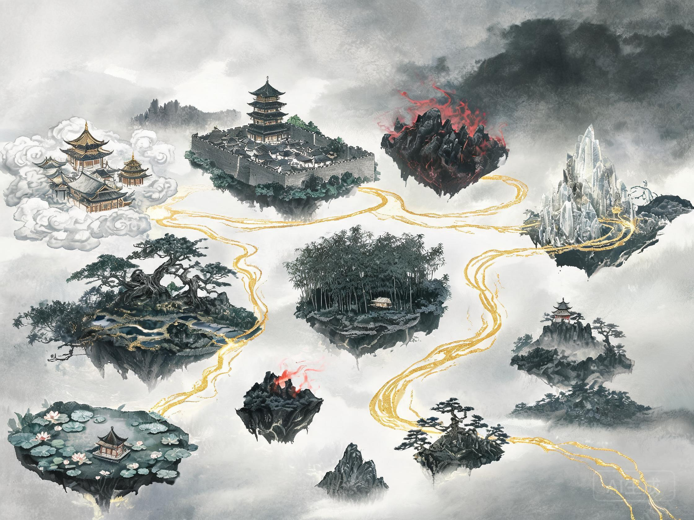

01项目概述
《洪荒剑仙》是一款仙侠题材的放置类网页 RPG：玩家扮演一名融合了上古剑心碎片的凡人，通过挂机修炼、装备炼化、经脉冲穴、灵宠养成不断变强，最终集齐碎片重铸神剑、轮回证道。整个游戏零依赖、零安装，浏览器打开即玩，进度保存在本地。
核心卖点
端游级养成深度
装备强化、宝石镶嵌、剑胚合成、四脉五层经脉、灵宠升星、三转轮回——把端游 MMORPG 十余年的养成体系压缩进一个网页，长线目标密集。
打开即玩，关了也涨
无下载、无注册、无加载等待；离线期间角色自动打坐修炼，回来结算收益。碎片化时间的完美填充物。
心魔劫 · 战胜自己
每日一次的镜像挑战——敌人就是玩家自己的复制品。用Build打败Build，是最诚实的战力检验，也是最有仪式感的每日钩子。
基本信息
| 项目 | 设定 | 说明 |
|---|---|---|
| 游戏类型 | 放置挂机 + 回合战斗 + 多系统养成 | 自动战斗为主，关键节点手动干预 |
| 目标平台 | 现代桌面 / 移动浏览器 | Chrome / Edge / Safari / 微信内置浏览器 |
| 技术形态 | 纯前端单页应用（Vanilla JS） | 无后端、无构建依赖，本地文件直接打开可玩 |
| 存档方案 | localStorage + 导出/导入存档码 | 自动保存，支持手动备份 |
| 付费模式 | 无内购（可预留打赏位） | 单机网页游戏，体验完整性优先 |
| 目标用户 | 仙侠/武侠题材爱好者、放置类玩家、怀旧端游玩家 | 对"当年那套养成"有情感记忆的群体 |
策划完成度导览
下表为当前策划已落实的模块总览，按文档章节索引。其中"已完成且数值完整"的模块已实例化到具体数值表，可直接用于 P0 数值预研。"已设计待深数值"的模块机制与设计方向已定稿，具体数值表将在后续迭代补齐。
| 模块 | 章节 | 已实例化要点 |
|---|---|---|
| 世界观与职业 | ch2 / ch3 / ch5 / ch7 | 人妖仙三族六大职业（剑修、御灵、战巫、毒巫、灵鹤、玄机）数值落地；六出身流派数值实例化；六职业技能树细节与出身流派逐项落实；连招/击飞/浮空结算公式实例化到具体职业技能 |
| 战斗数值引擎 | ch6 / ch15 | 总伤害=(物理+元素+附加)×等级修正；物理伤害 AP²÷(AP+DP÷1.5)×状态/体型修正；技能修正每级 +8%；十大类词缀作用与公式、附加伤害折半结算 |
| 装备体系 | ch8 | 七色品质总表（凡/良/上/珍/绝/仙/神）；强化成功率表（+1~+15，100%→34%，+5/+10/+15 保底、天工值满必成）；打孔镶嵌表（三孔 65%、补天顽石+8%/颗、五系六级宝石）；剑胚炼化表（零件成功率 80%/60%/40%、品质产出概率、属性互补+10%）；套装效果表（红套人王/地煞/天罡、紫套乾元/五灵/天香 20→95 级、赤诚套 45 银石，2/4/6 件递进） |
| 特色养成系统 | ch9 | 经脉打通成功率与气感保底（100%→30%、气感+8~+18、满 100 必成）；灵宠喂养数值（0–30 级免费、30–99 级每点耗 20 万经验、99 级出黄属性）与升星（40%/20%/5%）；坐骑四骑数值（移速 +10%~+20%）与收藏梯度 BUFF |
| 模块 | 章节 | 现状说明 |
|---|---|---|
| 轮回转生 | ch10 | 三转经验倍率 ×1.5/×2.5/×4.0、减伤 +10%/18%/25%、专属轮回套装等框架已定稿，待补转生消耗与奖励明细表 |
| 日常与活动 | ch11 | 每日循环、灵潮时节、坊市庙会、打坐离线的钩子设计已定，待补各玩法产出数值 |
| 宗门与剑阵 | ch12 | 宗门经营与单人剑阵机制已定，待补建筑升级与阵图增益数值 |
| 竞技与挑战 | ch13 | 论剑台段位 ladder、四模式 PVE 转化已定，待补段位战力阈值与押注赔率表 |
| 经济系统 | ch14 | 三货币产出/回收闭环已定，待补各货币具体消耗项数值 |
| 其余模块 | ch16–19 | UI/UX、技术方案、开发路线、风险对策均以设计描述为主，属规划向内容 |
02原型研究与模块转化
本策划案的原型研究来自畅游《刀剑英雄》官方资料站[1]。该站完整披露了一款运营十余年的东方武侠 MMORPG 的全部系统模块，是一座现成的"养成系统博物馆"。我们对其中新手指南、种族职业、宠物、武器装备、合成炼化、技能招式、经脉、转生、坐骑、心魔、阵法、帮会、竞技、任务活动等模块逐一拆解[2][3][4][5]，提炼出可迁移到网页单机场景的机制内核。
转化的三条总原则
- 社交 → 单机 AI 化：帮会、师徒、组队阵法等强社交模块，转化为 NPC 宗门、AI 弟子、单人剑阵，保留系统骨架，去掉真人依赖。
- 操作 → 决策化：端游的即时操作（连招手法、走位）转化为 Build 决策（技能搭配、连击顺序预设），符合放置品类的交互节奏。
- 长线 → 轮回化：端游靠资料片续命，单机网页游戏靠转生轮回制造周而复始的目标梯度。
模块映射总表
| 原型模块（资料站） | 机制内核 | 《洪荒剑仙》转化方案 | 取舍理由 |
|---|---|---|---|
| 种族职业（六族十一职业）[2] | 多职业差异化 Build | 精简为 4 出身（剑修/体修/丹修/御灵），转生时解锁转职 | 单机体量收敛，保证每个出身都做深 |
| 技能招式 + 连招 + 怒气必杀 | 连招体系与必杀爆发 | 战技/心法/必杀三系技能 + "剑势印记"连击系统 | 保留爽点，操作简化为顺序决策 |
| 武器装备（品质/套装/神器） | 收集与战力驱动 | 6 部位 × 7 品质 + 套装效果 | 完全保留，网页版核心循环 |
| 合成炼化（强化/打孔/镶嵌/零件合成）[4] | 深度养成与赌性 | 强化 +15、三孔镶嵌五系宝石、"剑胚炼化"零件合成 | 长线核心；增加概率公示提升信任 |
| 宠物系统（喂养/训练/升星）[3] | 陪伴 + 属性加成 | 灵宠：喂养升级、碎片升星、出战加成、图鉴收藏 | 保留，单机化后是最温暖的养成线 |
| 经脉系统[5] | 后期属性深坑 | 任/督/冲/带四脉 × 五层 + 丹田元神 | 保留，作为满级前后的核心追求 |
| 转生系统[6] | 轮回重置 + 永久增益 | 三转轮回：减伤增益、专属装备、经验倍率递增 | 保留，单机长线的发动机 |
| 坐骑 | 速度 + 收藏 | 坐骑加属性，并在秘境探索中缩短事件耗时 | 保留，绑定探索玩法才有存在感 |
| 心魔任务[7] | 每日镜像挑战换双倍经验 | 心魔劫：每日挑战自身镜像，胜得双倍修炼 Buff | 完美契合单机，原样保留精髓 |
| 阵法（组队布阵增益）[8] | 阵图学习 + 位置增益 | 剑阵：收集阵图，3×3 布阵获全局增益 | 去多人门槛，保留策略乐趣 |
| 帮会教派[9] | 组织、贡献度、建设 | 自建宗门 + AI 弟子历练 + 宗门任务/商店/灵田 | 社交 AI 化的典型转化 |
| 竞技（四模式/押注/观战）[10] | 规则化 PVP | 论剑台天梯（PVE 化四模式）+ 灵石押注 | PVP → AI 对手，规则玩法全部保留 |
| 摆摊/庙会/寄售 | 玩家交易经济 | 坊市庙会：定时刷新的 NPC 稀缺商品池 | 去交易保稀缺，规避单机无市 |
| 日常任务/定时活动 | 留存钩子 | 每日三件事 + 真实时辰"灵潮" + 打坐离线收益 | 保留，用真实时间制造回访节奏 |
03世界观与叙事
洪荒既分，仙路断绝。传说剑道之祖以一剑开天，陨落时佩剑碎为三百六十五枚剑心碎片散落人间——得碎片者得剑道传承。玩家本是边陲小城的打铁学徒，一次山洪冲开的古矿里，一枚碎片没入眉心。

四方势力
人族 · 九州
凡人王朝，灵脉稀薄却人口鼎盛。各大剑派林立，既是玩家的故乡，也是主线前中期的舞台。诸侯暗中争夺碎片，图谋"以凡问仙"。
仙族 · 天阙
上古之战后闭门不出的遗仙，视碎片为"僭越之器"。态度暧昧：既派人试炼持碎片者，又在暗处阻止魔族染指。
妖族 · 荒泽
化形未久的洪荒遗种，崇尚力量、恩怨分明。可敌可友，御灵出身的玩家可与妖族缔约，收其为灵宠。
魔族 · 渊底
被镇压在天渊之下的旧神残党，碎片的真正猎手。每章的终极 Boss 皆与"渊底之手"有关，是贯穿主线的暗线。
叙事结构
主线按"碎片收集"推进：游戏共设九章，每章对应一方区域、一位剧情人物与一枚碎片 Boss。章节既是关卡进度，也是系统解锁的节拍器——第二章解锁灵宠、第四章解锁经脉、第六章解锁宗门、第八章开启一转轮回，叙事节奏与养成节奏严格咬合。终章"重铸洪荒"后进入轮回后内容：真结局要求三转之后携完整神剑挑战剑祖残念。
04核心玩法循环
整个游戏由一个主循环与一个轮回外环构成：挂机修炼产出资源 → 资源投入养成 → 战力提升解锁更强敌人 → 更强敌人产出更高级资源；当等级触及 99 级天花板，轮回转生清空等级、保留增益，进入下一周目。
flowchart LR
A["挂机修炼
经验 · 修为 · 铜钱"] --> B["养成投入
强化 · 经脉 · 灵宠 · 技能"]
B --> C["战力提升"]
C --> D["挑战更强敌人
章节Boss · 论剑 · 万妖塔"]
D -->|"装备 · 材料 · 碎片"| B
D -->|"等级瓶颈 99 级"| E["轮回转生
清空等级 · 保留增益"]
E --> A
三层目标设计
| 层级 | 时间尺度 | 目标内容 | 对应系统 |
|---|---|---|---|
| 短线 | 单次会话（5–15 分钟） | 打完一轮日常、推一两关、点几下强化 | 心魔劫、日常任务、庙会刷新 |
| 中线 | 数天–两周 | 一件绝品毕业装 +15、一条经脉全通、灵宠升到 5 星 | 装备炼化、经脉、灵宠升星 |
| 长线 | 数周–数月 | 轮回转生 ×3、图鉴全收集、真结局 | 转生、坐骑/灵宠图鉴、终章 |
典型会话剧本
| 场景 | 玩家行为 | 设计意图 |
|---|---|---|
| 碎片 3 分钟 | 收离线收益 → 扫荡万妖塔 → 领日常奖励下线 | 零门槛回访，离线收益制造"回来就赚"的体感 |
| 午休 15 分钟 | 心魔劫 → 强化攒的材料 → 打一轮论剑 → 看庙会上新 | 决策密度最高的一段，消耗当日核心产出 |
| 周末 1 小时 | 推章节 Boss → 秘境探索 → 经脉冲穴 → 调整 Build | 深度内容集中在长会话，卡点在此突破 |
05角色系统
三大种族
创建角色时的第一层选择是种族。承袭原型端游"种族 · 职业"的设定[37][38][39]，凡间共有三族。种族决定出身背景、初始形象、属性倾向与可选职业池；三族在体质、法力与野心上各有长短，构成流派选择的根基。
人族 · 凡道
受九鼎封印所限，人自身能力并不强大，却数目庞大、懂得合作与循环之道，在神魔夹缝中以抗争夺回自主——最终的敌人，其实是自己。属性倾向 力量/身法均衡，成长曲线后期爆发。可选职业：剑客 · 双刀游侠[37]
仙族 · 仙格
凡界具灵性的生命久经修炼、达标者录入仙谱升格为仙，平添空灵幻性，与天地五行、阴阳之道最为亲近。散仙以元神炼化驭水火风雷，武尊执长兵为中远程控制之王。属性倾向 元神/身法，法系与控制见长。可选职业：散仙 · 武尊[38]
妖族 · 桀骜
魔族仿神族造仙之法制妖族。妖族虽为助魔控凡界而生，却我行我素、个性十足，既不感恩魔族、亦不仰慕神魔。力士力拔山河，巫灵以鞭链行冰火毒蛊惑。属性倾向 筋骨/元气，刚猛与灵动并济。可选职业：力士 · 巫灵[39]
六大职业
种族之下再选职业：职业决定武器、技能树与必杀技。本作完整承袭原型的三族六大职业[40][41][42][43][44][45]，各具连招体系与必杀节奏：
剑客 · 破军
以体魄潜能见长，初时平凡、假以成长则技能丰富，连击与必杀变幻无穷。代表战技：指南诀→乘风→回风舞柳；代表必杀：紫电穿云（60 级蓄力，灌注雷霆，前三段各 600 怒气、第四段 200）。[40]
双刀游侠 · 傲影
双刀双环、快靴劲装，鹤立势连招体系，身形灵巧、闪幻诡惑令对手难辨真伪。代表战技：镜中影/井中月→水月刹那；代表必杀：一气化三清（2000 怒气，遁形分身八面）。[41]
散仙 · 沧澜
拂尘锡杖近于法器，以元神化天地万物之力，远距元素法系、冰冻/击退控场。代表战技：日月如梭→红莲开/冰狩→坎离火鸦；代表必杀：碧海寒星（蓄力引碧海寒冰，冰冻路线之敌）。[42]
武尊 · 镇岳
神族后裔、隶属仙族，执长兵器为当之无愧的中远程控制之王；天罡正气以牺牲防御换取无视对方防御，行侠卫道。代表战技：风云引→回马枪；代表必杀：鹏搏九霄（蓄力借鲲鹏之力，击退倒地）。[43]
力士 · 擎山
天生高大强壮，斧锤力拔山河、横扫千军，兼擒拿举摔诸技，武勇刚强，初时便有神力。代表战技：罗刹三式→破坚/盘古开天；代表必杀：天地乍合（蓄力引山火之力，眩晕敌人）。[44]
巫灵 · 魅影
鞭链兵刃变化莫测，以冰火毒蛊惑之术游走九州；女性魅惑动人、实则以无形之术惑人，男性刚毅凶狠。代表战技：燕抬腮→惑心/缚龙→龙破天；代表必杀：画地为牢（蓄力愈久束缚愈长，第四段破防）。[45]
| 职业 | 种族 | 武器 | 核心定位 | 代表必杀（怒气） |
|---|---|---|---|---|
| 剑客 · 破军 | 人族 | 长剑 | 单体爆发 · 连击 | 紫电穿云（蓄力） |
| 双刀游侠 · 傲影 | 人族 | 双刀双环 | 高速连段 · 幻影控制 | 一气化三清（2000） |
| 散仙 · 沧澜 | 仙族 | 拂尘锡杖 | 远距元素法系 · 控场 | 碧海寒星（蓄力） |
| 武尊 · 镇岳 | 仙族 | 长兵器 | 中远程控制 · 卫道 | 鹏搏九霄（蓄力） |
| 力士 · 擎山 | 妖族 | 斧 / 锤 | 近战群攻 · 擒投 | 天地乍合（蓄力） |
| 巫灵 · 魅影 | 妖族 | 鞭 / 链 | 状态操控 · 蛊惑 | 画地为牢（蓄力） |
四大出身
职业决定"用什么打"，出身则决定"怎么打"。四大出身是叠于种族 · 职业之上的战斗流派姿态，决定初始属性倾向与成长侧重，转生后可解锁出身进阶。原型端游的"六族十一职业"在本作收敛为三族六大职业 + 四大出身姿态[2]：
剑修 · 出鞘
单体爆发，会心流。前期疲软、中后期滚雪球，必杀技倍率全流派最高。适合追求"一剑破万法"的玩家。
体修 · 不动
防御反伤，站桩流。生存能力最强，越级挑战容错高，战斗节奏慢但极稳。挂机推图的最优解。
丹修 · 回春
治疗增益，消耗流。以毒/灼烧持续伤害与回复见长，多回合战斗优势巨大，克制高攻速敌。
御灵 · 共生
灵宠协同，人宠合击。把灵宠系统从"加成器"变成"第二战斗位"，图鉴收集越全战力越强。
属性体系
原型端游的四维基础属性[18][19]决定了面板属性，属性点不是直接加面板，而是通过公式换算。本作完整移植这一体系：
| 基础属性 | 面板换算公式 | 原型依据 |
|---|---|---|
| 力量 | 最小物理攻击 = 力量÷10 + 装备最小攻击之和 × (1 + 力量÷(100+等级×2)) 最大物理攻击 = 力量÷5 + 装备最大攻击之和 × (1 + 力量÷(100+等级×2)) | 52pk 公式页[18] |
| 元神 | 最小元素攻击 = 元神÷10 + 装备最小元素之和 × (1 + 元神÷(100+等级×2)) 最大元素攻击 = 元神÷5 + 装备最大元素之和 × (1 + 元神÷(100+等级×2)) | 52pk 公式页[18]（注：原型双刀游侠分母为 140+等级×2，本作统一为 100+等级×2） |
| 筋骨 | 防御力 = 筋骨÷3 + 装备防御综合 × (1 + 筋骨÷200) 每 2 点筋骨 = 体力上限 +1 每 50 点筋骨 = 会心抵抗 +1% | 52pk 公式页[18]、属性详解[19] |
| 体魄 | 气血上限 = 体魄 × 等数 + 装备气血加成 决定负重上限与抗打断能力 | 17173 新服攻略[20] |
| 面板属性 | 作用 | 主要来源 |
|---|---|---|
| 气血 | 生命上限，归零则战斗失败 | 体魄、装备、等级成长 |
| 灵力 | 释放战技的消耗资源，每回合自然恢复 | 等级、心法、经脉 |
| 物理攻击 | 物理伤害基础值（力量换算+装备） | 力量潜能、武器 |
| 元素攻击 | 元素伤害基础值（元神换算+装备） | 元神潜能、法器 |
| 防御力 | 按公式减免所受物理伤害 | 筋骨潜能、护甲 |
| 身法 | 出手顺序与闪避概率 | 轻甲、身法潜能 |
| 会心值 | 转化为会心几率，触发时伤害 ×1.5 | 武器词缀、经脉第四层[21] |
| 怒气 | 受击与攻击积累，满值释放必杀 | 上限随经脉第五层提升 |
潜能点自由分配
沿用原型端游"点数分配"的设计[1]：每升一级获得 3 点潜能，可自由投入五维--力（物理攻击）、气（灵力上限与恢复）、神（元素攻击/会心）、身（身法）、根（气血与防御）。五维没有标准答案，构成流派内的微调空间；游戏提供洗髓丹（宗门贡献兑换）用于重置分配，鼓励实验。
06战斗系统
战斗采用自动回合制 + 手动必杀干预：双方按身法决定出手序，普通攻击与战技由 AI 自动执行，必杀技的释放时机交给玩家——这是放置玩法里保留"操作感"的最小设计。单场战斗 10–20 回合，每回合 1.5 秒，可随时 2 倍速或跳过。
怒气机制
- 普攻 +50 怒气，受击 +30，会心一击额外 +20；基础怒气上限 1000。
- 必杀技按怒气消耗分三档（1000 / 2000 / 3000），越贵越强，存怒还是爆发是核心决策。
- 部分心法（如体修《不动明王》）受击怒气翻倍，塑造"越挨打越强"的流派手感。
剑势连击（连招转化）
原型端游的连招体系[2]转化为"剑势印记"：战技命中积攒剑势（上限 5 层），特定技能按预设顺序连续释放时触发剑意共鸣，追加一段真实伤害并清空印记。玩家在技能界面预设三套连招方案，战前根据敌人类型切换——把端游的"手法"变成单机的"配置"。
状态效果
| 状态 | 效果 | 典型来源 |
|---|---|---|
| 灼烧 | 每回合损失气血，可叠加 3 层 | 丹修火毒、赤焰狐 |
| 中毒 | 每回合按最大气血百分比掉血，无视防御 | 丹修、《五毒经》 |
| 麻痹 | 跳过下一回合行动 | 御灵雷系、高阶剑修 |
| 减速 | 身法 −30%，出手序后移 | 玄龟、寒冰词缀 |
| 破绽 | 受到会心概率大幅提升 | 必杀技、连击收招 |
| 护体 | 吸收固定伤害的护盾 | 丹修、体修心法 |
伤害结算公式体系（核心算式）
以下公式直接移植自原型端游的战斗数值引擎[18][22]，是本作战斗系统的数学根基。所有词缀、技能、属性的数值都通过以下链路参与结算：
一、总伤害公式
同等级时等级修正为 1.02（即 2% 基础修正）。高打低有加成，低打高有惩罚--这保证了等级差距的数值意义[18]。
二、物理伤害公式
其中 AP = 实际攻击力，DP = 目标防御力[22][18]。
技能修正 = 技能提供的攻击力加成百分比。例如 1 级龙搏修正 75%、1 级断云修正 130%[18]。技能等级提升后修正百分比增大，是技能升级的直接收益。
| 防御/攻击 (DP/AP) | 实际伤害占 AP 比例 | 解读 |
|---|---|---|
| 1.0（防=攻） | ≈ 61.2% | 防御与攻击持平时，伤害约为攻击力的 60% |
| 2.0（防=2倍攻） | ≈ 43.7% | 防御翻倍，伤害仅降 17.5% |
| 3.0（防=3倍攻） | ≈ 34.0% | 再翻倍，伤害再降 9.7%--边际递减明显 |
| 4.0（防=4倍攻） | ≈ 27.8% | 继续堆防御收益极低 |
设计结论：防御堆到 DP/AP ≈ 2–3 即可，再堆收益骤降。攻击力提升则是线性增益（AP 翻倍 ≈ 伤害翻倍），所以输出职业优先堆攻击[22]。
三、元素伤害公式
三种元素伤害独立计算后叠加。元素攻击力不受物理防御力减免，只受对应的元素抗性%减免[18]。
四、附加伤害
附加伤害是装备词缀中"附加 XX 伤害"类词条的结算方式，数值折半后参与总伤害[18]。
五、状态修正系数
| 状态 | 修正系数 | 触发条件 | 原型依据 |
|---|---|---|---|
| 会心一击 | ×1.5（150%） | 会心值->会心几率->概率触发 | 17173 会心解析[21] |
| 无视防御（装备词缀） | ×1.5 | 装备词缀触发 | 52pk 公式页[18] |
| 连招加成点 | ×2.0（200%） | 第 7/10/15/20/27/35 段命中 | 剑客连招页[11] |
| 浮空追击 | ×1.3（130%） | 目标处于浮空状态 | 连招状态标签设计 |
| 击倒追击 | ×1.2（120%） | 目标处于击倒状态 | 连招状态标签设计 |
状态修正是乘算叠加的：如果一段攻击同时触发会心 + 加成点，则修正 = 1.5 × 2.0 = 3.0（300%）。这让"把大招安排在加成点上并触发会心"成为输出最大化的终极策略[18]。
六、体型修正
怪物分小体/中体/大体三类，装备的"体型伤害%"词缀对对应体型怪物生效。如神武龙牙刀"中体伤害 8%、大体伤害 8%"，对中体/大体怪物的最终伤害 ×1.08[14]。
七、完整结算链路（总公式）
结算顺序：物理伤害（AP²收敛公式扣防御） -> 元素伤害（独立结算扣三防） -> 附加伤害（折半） -> 三段相加 -> 技能修正 -> 状态修正（乘算叠加） -> 体型修正 -> 等级修正。其中物理伤害和元素伤害分列结算、互不干扰--物理被高防克制时元素仍可输出，反之亦然，保证了双修流派的生存空间[18][22]。
八、会心系统
会心即暴击，触发时伤害 ×1.5（150%）[21]。会心值转化为会心几率（隐藏属性），会心值越高触发概率越高。对应存在会心抵抗属性（每 50 点筋骨 +1% 会心抵抗[19]），用于 PVP 对抗。会心伤害加成为高阶追求（从 1.5 倍提升到 1.6+ 倍），仅顶级装备/经脉提供[21]。
九、破绽系统
原型竞技系统的破绽值[24]：每次攻击/被格挡增加破绽值，到 100 时角色被红色气流笼罩，受击造成硬直（无法行动直到对方连招结束）。本作转化为：破绽值到 100 时，受到的会心概率大幅提升且无法闪避--连招的高连击数可以快速撑满对方破绽，为必杀技创造爆发窗口。破绽的数值积累规则（参考原型 PK 破绽计算[36][24]）如下：
| 攻击类型 | 破绽增加值（每段） | 说明 |
|---|---|---|
| 普通攻击（基础技） | +8 | 裂石斩等基础技稳定积累 |
| 小型战技 | +12 ~ +15 | 乘风 / 扫叶 / 破玉掌等中低耗技能 |
| 大型战技 / 大招 | +20 ~ +25 | 和合六出 / 龙腾 / 风卷残云等高耗技能 |
| 必杀技 | +30 | 骤雨打青荷 / 一气化三清，几乎必撑满 |
| 被格挡 / 格挡成功 | +10（攻防双方都增加） | 格挡是双刃剑，触发"解破绽"技能可化解 |
破绽值 0–100 积累，满 100 时角色被红色气流笼罩并硬直。数值上，一记大连招（20+ 段、含若干大招）累计破绽约 100–150，可在连招末段把目标打成硬直并接上必杀技完成爆发--这就是"连招 -> 破绽 -> 必杀"的完整输出循环。
07技能体系
每个出身拥有 8 个战技 + 6 个心法（被动）+ 3 个必杀技，沿用原型"战术技能 / 辅助技能 / 必杀技"的三层结构[2]。技能随等级解锁，升级消耗技能点（升级与任务产出），上限 10 级；高阶技能额外需要击败特定 Boss 掉落的秘籍才能习得。
技能升级机制（数值成长）
原型端游中，技能升级的核心收益是技能修正百分比的提升[18]。技能修正是物理/元素伤害公式中直接乘算的系数（见第 6 章"实际攻击力 AP = 面板攻击力 × 技能修正%"），技能等级越高，修正%越大，伤害越高。
| 技能等级 | 修正%成长 | 举例（龙搏） | 升级消耗 |
|---|---|---|---|
| 1 级 | 基础修正 | 75% | 1 技能点 |
| 2 级 | +8% | 83% | 1 技能点 |
| 3 级 | +8% | 91% | 2 技能点 |
| 4 级 | +8% | 99% | 2 技能点 |
| 5 级 | +8% | 107% | 3 技能点 + 秘籍·龙搏残页 |
| 6 级 | +8% | 115% | 3 技能点 |
| 7 级 | +8% | 123% | 4 技能点 + 秘籍·龙搏残页 |
| 8 级 | +8% | 131% | 4 技能点 |
| 9 级 | +8% | 139% | 5 技能点 + 秘籍·龙搏残页 |
| 10 级（满） | +8% | 147% | 5 技能点 + 秘籍·龙搏全本 |
从 1 级到 10 级满级，修正%从 75% 增长到 147%--接近翻倍。这意味着同面板下满级技能的伤害约为 1 级的 1.96 倍（147÷75）。技能等级是独立于装备之外的第二条成长线，且消耗的技能点是有限资源（等级+任务产出），构成"先升哪个技能"的分配策略。
原型技能修正实测数据（设计参考基准）
以下为原型剑客若干代表性技能满级/中级的实测修正百分比[34][18]，作为本作技能数值的基准参考（本作会在此基础上按"每级 +8% 修正"的成长曲线重做，见表格上方成长曲线）。
| 原型技能 | 等级 | 攻击修正% | 解析类型 | 备注 |
|---|---|---|---|---|
| 龙搏 | 6 级 | 100% | 连击（独立段） | 浮空起手技，基础电系伤害 |
| 断云 | 10 级 | 220% | 单击 | 远程击倒，高单段倍率 |
| 和合六出 | 10 级 | 90%/段×4 | 连击（合计 360%） | 四连击，单段偏低靠段数堆叠[34] |
| 龙腾 | 6 级 | 105/0/0/0/125%（合计 230%） | 多段单击 | 空中追击，末段最高，需前置浮空[34] |
| 破军 | 10 级 | 240% | 单击/突进 | 2 连击远程突进收尾技 |
| 指南诀 | 10 级 | 70/75/75/150%（合计 370%） | 连击合计 | 第4段 150% 最高且带击倒 |
| 风卷残云 | 8 级 | 正十字 660% / 斜向 880%（合计） | 多段单击 | 有效 HIT 3/4，方向影响段数[35] |
| 鸿飞碧落 | 满级 | 210% + 105% | 多段单击（二段） | 武器投掷，飞空再砸落两段伤害 |
技能类型与修正分类
| 修正类型 | 说明 | 原型示例 |
|---|---|---|
| 攻击修正% | 直接乘算面板攻击力，多数战技为此类 | 龙搏 75%、断云 130%[18] |
| 固定伤害 | 不乘算面板，造成固定数值伤害（摔投技/真实伤害） | 缠龙手（真实伤害）[11] |
| 多段修正（连击/多段单击/连击合计） | 每段独立修正或合计拆分，总伤害 = Σ(各段修正×AP) | 和合六出 4 连击、龙腾 5 连击[34][11] |
| 状态修正 | 触发会心/加成点时额外 ×1.5/×2.0（乘算叠加） | 会心 ×1.5[21]、加成点 ×2.0[11] |
技能攻击百分比：四类解析
原型实测将技能面板的"攻击 XX%"按打击方式分为四种解析类型[34]，这决定了技能的伤害如何套进"AP × 技能修正"公式。本作完整沿用这套分类，是连招数值设计的第一块基石：
| 解析类型 | 含义 | 原型示例 | 结算方式 |
|---|---|---|---|
| 单击类 | 描述的攻击% 即该段实际伤害修正，直接套用 AP | 断云（10级 220%）、破军（240%） | 单段：伤害 = AP × 修正% |
| 连击类 | 分若干段，每段独立命中并独立结算 | 和合六出（90%/段×4）、龙搏 | 总伤害 = Σ(每段修正% × AP) |
| 连击合计类 | 面板%为整招合计，拆到各段，合计恰为该值 | 指南诀（70/75/75/150%） | 单段伤害按占比分配，合计固定 |
| 多段单击类 | 看似多段，实为多个独立"单击"解析 | 龙腾、风卷残云、鸿飞碧落 | 每段独立结算：总伤害 = Σ(段修正% × AP) |
四类决定了"多段技能的第几段落在加成点上"意义不同：连击类 / 多段单击类每段都是独立伤害，落在加成点的那一段单独 ×2，总增益最可观；连击合计类若整招落在加成点则整招 ×2。因此连招配置时应把多段独立型大招（龙腾 / 骤雨打青荷 / 一气化三清）放在第 7/10/15/20/27/35 段的加成点上。
示例：剑修技能表（节选）
| 技能 | 解锁 | 类型 | 效果描述 |
|---|---|---|---|
| 裂石斩 | 1 级 | 战技 | 120% 攻击单体伤害，剑势 +1 |
| 青峰三叠 | 8 级 | 战技 | 三段连击，每段 60%，全部命中剑势 +2 |
| 破妄一剑 | 12 级 | 战技 | 150% 攻击并无视目标 30% 防御 |
| 惊鸿照影 | 18 级 | 战技 | 自身会心率 +15%，持续 2 回合 |
| 万剑归一 | 25 级 | 战技 | 90% 攻击全体敌人 |
| 剑心通明 | 40 级 | 心法 | 被动：每回合额外恢复 5% 灵力 |
| 剑势 · 天崩 | 30 级 | 必杀 | 消耗 1000 怒气：320% 单体伤害并施加破绽 |
| 剑势 · 长河 | 45 级 | 必杀 | 消耗 2000 怒气：180% 全体伤害，清空剑势每层 +8% |
| 剑势 · 问仙 | 60 级 | 必杀 | 消耗 3000 怒气：250% 单体，对气血低于 30% 的目标直接斩杀 |
连招预设示例
共鸣公式存在多套（不同顺序对应不同增益：伤害型 / 增益型 / 控制型），由玩家在战斗外探索与配置，构成流派的第二层深度。
连招系统详解：状态标签与衔接规则
原型端游的连招是即时操作（手动按键、方向要求、编辑器切换）[11]。放置游戏里不能要求操作，但可以保留其策略内核--把"按键时机"翻译成"技能顺序配置"，把"方向/距离限制"翻译成"状态标签衔接规则"。核心是把每个战技打上状态标签，连招引擎按标签判定能否衔接：
| 状态标签 | 原型对应 | 效果 | 可衔接的后续类型 |
|---|---|---|---|
| 击倒 | 指南诀第4段、御风、断云[11] | 目标倒地 1 回合，期间受击伤害 +20% | 追击类（收尾）/ 远程追击类 |
| 浮空 | 神龙摆尾、追风、龙搏、羚羊挂角第3段[11] | 目标滞空 1 回合，期间无法行动，空中受击追加 30% 伤害 | 空中追击类（如龙腾系列） |
| 击退 | 破玉掌[11] | 目标后退，下回合出手序延后 | 远程追击类 / 突进类 |
| 摔投 | 缠龙手（有距离前置条件）[11] | 擒拿投掷，造成真实伤害无视防御 | 任意（摔投为收招技） |
| 追击 | 御风、破军（远程追击）[11] | 对击倒/击退目标追加一段伤害 | -（收尾技，连招终结） |
| 投掷 | 鸿飞碧落（武器投掷，需前接无武器技能）[11] | 抛出武器造成远程爆发，用毕短暂"空手" | 无武器类技能（扫叶、破玉掌、羚羊挂角） |
| 突进 | 破军（2连击远程突进） | 快速接近击退/远处的目标 | 任意近战类 |
浮空 / 击倒机制的数值与公式
原型连招的三个核心控制态——浮空、击倒、击退——在本作中是连招价值的主要来源，其行动收益与伤害修正由以下规则决定：
| 状态 | 持续 | 行动收益 | 伤害修正 | 触发技能 |
|---|---|---|---|---|
| 浮空 | 1 回合 | 目标无法行动 | 滞空中受击 +30%（×1.3 浮空追击） | 龙搏、神龙摆尾、羚羊挂角第3段 |
| 击倒 | 1 回合 | 目标倒地，下回合出手序延后 | 倒地受击 +20%（×1.2 击倒追击） | 断云、指南诀第4段、御风、劈挂腿 |
| 击退 | 位移 | 拉开距离，敌方出手序延后 | - | 破玉掌、气爆 |
| 摔投 | 瞬发 | 擒拿投掷，无视防御 | 固定真实伤害，不乘防御 | 缠龙手 |
即同一连招内浮空段越多，空中追加伤害越高：单次"龙搏(浮空) -> 龙腾(空中追击)"为 +30%；若能连续衔接多次浮空（需引擎支持空中连打），加成分层累加，上限 +90%。这与原型的"空中追击连段越多越疼"逻辑一致[11]，也兑现了连招状态标签（浮空 -> 空中追击）的衔接收益。
加成点机制
原型的核心爽点是连击加成点：第 7、10、15、20、27、35 段命中享有 200% 攻击加成[11]。本作完整移植这一机制：连招序列中击中第 7、10、15、20、27、35 段时，该段伤害 ×2（200%）。早期加成点（7/10/15）轻易达成但单点增益有限，后期加成点（20/27/35）需要大连招才够得到，配合二次掉宝收益更高。因此连招配置的核心策略变成"把高倍率技能安排在加成点上"--是把大招放在第7段爆发，还是憋到第15段一击必杀，构成流派的第三层深度。系统提供连招编辑器（3 套预设槽，原型编辑器切换的单机化[11]），战斗前根据敌人类型选配。
技能参数总表（剑修 18 技能 + 4 必杀）
以下参数从原型剑客[11]、双刀游侠[16]、力士[17]三职业的技能设计中提炼，统一翻译为本作剑修的参数体系。每个技能有五个维度：段数（连击数）、范围（单体/周围/直线/大范围）、状态标签、伤害类型（物理/元素）、灵力消耗。
| 技能 | 段数 | 范围 | 状态标签 | 伤害类型 | 灵力消耗 | 原型出处 |
|---|---|---|---|---|---|---|
| 裂石斩（基础技） | 4 | 单体 | 击倒（第4段） | 物理 | 0 | 指南诀[11] |
| 乘风 | 2 | 单体 | - | 物理 | 低 | 乘风[11] |
| 扫叶 | 1 | 周围（正十字） | -（无武器技） | 物理 | 中 | 扫叶[11] |
| 御风 | 2 | 单体·远程追击 | 击倒·追击 | 物理 | 中 | 御风[11] |
| 缠龙手 | 1 | 单体·近身 | 摔投（距离前置） | 真实 | 中 | 缠龙手[11] |
| 神龙摆尾 | 1 | 单体（正十字） | 浮空 | 物理 | 中 | 神龙摆尾[11] |
| 破玉掌 | 1 | 单体 | 击退·无武器 | 物理 | 低 | 破玉掌[11] |
| 和合六出 | 4 | 单体 | - | 物理 | 中 | 和合六出[11] |
| 龙搏 | 1 | 单体 | 浮空 | 物理 | 中 | 龙搏[11] |
| 断云 | 1 | 单体·远程 | 击倒 | 物理 | 中 | 断云[11] |
| 流星赶月 | 1 | 单体·中远距 | -（禁对浮空） | 物理·剑气 | 中 | 流星赶月[11] |
| 破军 | 2 | 单体·远程突进 | 突进 | 物理 | 中 | 破军[11] |
| 羚羊挂角 | 3 | 单体 | 浮空（第3段）·无武器 | 物理 | 中 | 羚羊挂角[11] |
| 风卷残云 | 4-5 | 周围（正十字4/斜向5） | - | 物理 | 高 | 风卷残云[11] |
| 鸿飞碧落 | 4 | 单体·远程 | 投掷（禁浮空目标） | 物理 | 高 | 鸿飞碧落[11] |
| 龙腾 | 5 | 单体 | 空中追击（需前置浮空） | 物理 | 高 | 龙腾[11] |
| 苍龙搅海 | 2 | 周围 | 击倒（群控） | 物理 | 高 | 力士苍龙搅海势[17] |
| 劈挂腿 | 1 | 直线（多目标） | 击倒（群控） | 物理 | 中 | 双刀劈挂腿[16] |
必杀技参数
| 必杀 | 段数 | 范围 | 状态标签 | 怒气消耗 | 原型出处 |
|---|---|---|---|---|---|
| 骤雨打青荷 | 8 | 单体 | -（连招收尾） | 1000（满怒） | 剑客必杀[11] |
| 气爆 | 1 | 周围（全体） | 击退（群控保命） | 1000 | 双刀/力士气爆[16][17] |
| 一气化三清 | 8 | 大范围（分身八面） | - | 2000 | 双刀必杀[16] |
| 天地乍合 | 1 | 周围 | 眩晕（群控·蓄力） | 2000（蓄力型） | 力士必杀[17] |
连击分数与装备成长
原型的连击分数直接影响绿色武器的经验获取[12]。本作沿用：连击数越高，挂机修炼的经验加成越高（每 10 连击 +5% 经验，上限 +50%），同时影响"剑心武器"（绿色武器的转化）的成长速度。这让连招配置不只是战斗策略，也是养成效率策略--配一套好连招，升级更快。
小连招 vs 大连招（转化自原型分类）
原型把连招分为小连招（7/10 连，省灵力快速清怪）与大连招（20+ 连，竞技与二次掉宝）[11]。本作保留这一分类：
- 小连招（≤10 段）：灵力消耗低，适合挂机清杂兵，触发 7 连加成点即可收尾；
- 大连招（20–35 段）：灵力消耗高，用于 Boss 战与论剑，追求触发 15/27 加成点的大招，且高连击数激活二次掉落（连击 ≥20 时，掉落表额外掷骰一次）。
示例：剑修连招配置（转化自原型剑客连招）
以下连招方案直接参照原型剑客连招的衔接逻辑[11]，按状态标签翻译为放置版：
| 方案 | 序列 | 段数 | 加成点对齐 | 用途 |
|---|---|---|---|---|
| 清兵小连招 | 裂石×2 → 乘风 → 裂石×4 | 7 段 | 第7段 = 裂石（基础技，加成有限） | 挂机清杂兵，省灵力 |
| 浮空追击连 | 裂石×2 → 扫叶 → 裂石×2 → 乘风 → 裂石×2 → 龙搏(浮空) → 龙腾(空中追击) → 裂石×3 → 御风(追击收尾) | 15 段 | 第15段 = 御风追击（×2 倍率收尾） | Boss 战，浮空段空中加成 |
| 大连招（含必杀） | 裂石×2 → 扫叶 → 裂石×2 → 流星赶月 → 裂石 → 和合六出 → 裂石×2 → 龙搏(浮空) → 破军(突进) → 裂石×2 → 羚羊挂角(浮空) → 风卷残云 → 裂石×2 → 龙腾(空中追击) → 如封似闭 → 乘风 → 御风 → 必杀·骤雨打青荷 | 27 段 | 第27段 = 必杀技（×2 倍率大招收尾） | 论剑/心魔劫，追求最高爆发与二次掉落 |
六大职业技能树（原型数值实例化）
承袭原型三族六职业[40][41][42][43][44][45]，每个职业拥有一套身份技能树--攻击修正%、段数、范围、状态标签与消耗已逐一实例化如下。下表与前述"剑修通用剑技表"互为补充：前者是各族各职业的身份武学（解锁随等级），后者是剑修流派的通用剑技（连招体系），同一角色可同时掌握。状态标签、伤害公式与灵力消耗均落入第 7 章已建立的结算体系。
剑客 · 破军（人族 / 长剑 / 单体爆发·连击）
| 技能 | 解锁 | 段数 | 伤害修正 / 特性 | 范围 | 状态标签 | 伤害类型 | 消耗 |
|---|---|---|---|---|---|---|---|
| 指南诀 | 1 级 | 4 | 连击合计 100%（80/80/…) | 单体 | 击倒（第4段） | 物理 | 0·基础技[40] |
| 乘风 | 3 级 | 2 | 连击 2×58% | 单体 | — | 物理 | 低[40] |
| 扫叶 | 8 级 | 1 | 攻击 150% | 周围 | 击退（群） | 物理 | 中[40] |
| 御风 | 10 级 | 2 | 连击 2×70% | 单体·远程追击 | 追击 | 物理 | 中[40] |
| 回风舞柳 | 10 级 | 1 | 攻击 175% | 单体 | 击倒 | 物理 | 中[40] |
| 缠龙手 | 12 级 | 1 | 固定真实伤害（无视防御） | 单体·近身 | 摔投 | 真实 | 中[40] |
| 神龙摆尾 | 16 级 | 1 | 攻击 155% | 单体 | 浮空 | 物理 | 中[40] |
| 追风 | 16 级 | 2 | 连击 2×62% | 单体 | — | 物理 | 低[40] |
| 碎金 | 18 级 | 1 | 攻击 140%·破防 | 单体 | 破绽 | 物理 | 中[40] |
| 破玉掌 | 21 级 | 1 | 攻击 130% | 单体 | 击退 | 物理 | 低[40] |
| 和合六出 | 23 级 | 4 | 连击 4×90%（合计 360%） | 单体 | — | 物理 | 中[40] |
| 龙搏 | 27 级 | 1 | 攻击 175% | 单体 | 浮空 | 物理 | 中[40] |
| 断云 | 31 级 | 1 | 攻击 205% | 单体·远程 | 击倒 | 物理 | 中[40] |
| 流星赶月 | 34 级 | 1 | 攻击 165%·剑气 | 中远距离 | 突进 | 物理 | 中[40] |
| 破军 | 37 级 | 2 | 连击 2×95%·突进 | 单体·远程突进 | 突进 | 物理 | 中[40] |
| 羚羊挂角 | 40 级 | 3 | 多段单击 75/75/150% | 单体 | 浮空（第3段） | 物理 | 中[40] |
| 风卷残云 | 44 级 | 4–5 | 正十字 660% / 斜向 880%（合计） | 周围 | — | 物理 | 高[40] |
| 截脉 | 48 级 | 1 | 攻击 160% | 单体 | 麻痹（定身） | 物理 | 中[40] |
| 鸿飞碧落 | 52 级 | 4 | 投掷 210%+105%·远程 | 单体·远程 | 投掷 | 物理 | 高[40] |
| 龙腾 | 60 级 | 5 | 空中追击 105/0/0/0/125（合计 230%） | 单体 | 空中追击（需浮空） | 物理 | 高[40] |
剑客必杀技
| 技能 | 解锁 | 段数 | 伤害修正 / 特性 | 范围 | 状态标签 | 伤害类型 | 消耗 |
|---|---|---|---|---|---|---|---|
| 气爆 | 1 级 | 1 | 境界爆发·群退 | 周围 | 击退 | 物理 | 怒气 1000[40] |
| 骤雨打青荷 | 13 级 | 8 | 多段单击 8×55%（合计 440%） | 单体 | —（连招收尾） | 物理 | 怒气 1000[40] |
| 流云万变 | 35 级 | 1 | 穿梭攻击大片敌人 | 大范围 | — | 物理 | 怒气 2000[40] |
| 紫电穿云 | 60 级 | 蓄1+1 | 三段蓄力 600/600/600 + 末段 200 链伤 | 路线·穿透 | 蓄力·贯通 | 物理·雷 | 怒气 600/600/600/200[40] |
双刀游侠 · 傲影（人族 / 双刀·双环 / 高速连段·幻影）
| 技能 | 解锁 | 段数 | 伤害修正 / 特性 | 范围 | 状态标签 | 伤害类型 | 消耗 |
|---|---|---|---|---|---|---|---|
| 解牛刀法 | 1 级 | 3 | 连击合计 110% | 单体 | 击倒（破绽中敌人） | 物理 | 0·基础技[41] |
| 风隼腿法 | 3 级 | 2 | 连击 2×55% | 单体 | — | 物理 | 低[41] |
| 镜中影 | 8 级 | 2 | 连击 2×70%+幻影 | 单体 | 分身 | 物理 | 中[41] |
| 井中月 | 10 级 | 1 | 攻击 150%+留影 | 单体·位移 | 分身 | 物理 | 中[41] |
| 魁星踢斗 | 12 级 | 2 | 连击 2×75% | 单体 | 击倒 | 物理 | 中[41] |
| 螳螂刺 | 16 级 | 1 | 攻击 145% | 单体 | 定身 | 物理 | 中[41] |
| 黄雀夺 | 18 级 | 1 | 攻击 170%·背后突进 | 单体 | 突进 | 物理 | 中[41] |
| 劈挂腿 | 21 级 | 1 | 直线攻击 185% | 直线·多目标 | 击倒（群） | 物理 | 中[41] |
| 隼连纵 | 23 级 | 2 | 连击 2×65% | 单体·位移 | 追击 | 物理 | 中[41] |
| 旋风连环腿 | 27 级 | 3 | 连击 3×55% | 周围 | — | 物理 | 中[41] |
| 含沙射影 | 31 级 | 1 | 暗器 140%·后跃 | 单体·反向位移 | 投掷 | 物理 | 中[41] |
| 蛇行绞剪腿 | 34 级 | 2 | 连击 2×80%·破防 | 单体 | 击飞 | 物理 | 中[41] |
| 红玉击鼓 | 37 级 | 4 | 连击 4×60% | 单体 | 击飞（末段） | 物理 | 高[41] |
| 闪通背 | 40 级 | 1 | 攻击 185%·抓身后突袭 | 单体 | 突进 | 物理 | 中[41] |
| 阴阳扣 | 44 级 | 4 | 幻影连击 4×70% | 单体 | 分身·夹击 | 物理 | 高[41] |
| 穿云腿 | 48 级 | 2 | 连击 2×85% | 单体 | 击飞 | 物理 | 中[41] |
| 漫天花雨 | 52 级 | 6 | 暗器雨 6×45% | 直线·多目标 | 投掷 | 物理 | 高[41] |
| 水月刹那 | 60 级 | 8 | 分身连击 8×70%（合计 560%） | 单体 | 分身·无法防范 | 物理 | 高[41] |
双刀游侠必杀技
| 技能 | 解锁 | 段数 | 伤害修正 / 特性 | 范围 | 状态标签 | 伤害类型 | 消耗 |
|---|---|---|---|---|---|---|---|
| 气爆 | 1 级 | 1 | 境界爆发·群退 | 周围 | 击退 | 物理 | 怒气 1000[41] |
| 幻影阵 | 13 级 | 6 | 幻影连击 6×60% | 单体 | 分身 | 物理 | 怒气 1000[41] |
| 一气化三清 | 35 级 | 8 | 分身八面 8×75%（合计 600%） | 大范围 | 分身 | 物理 | 怒气 2000[41] |
| 飞花点翠 | 60 级 | 蓄1+1 | 三段蓄力 600/600/600 + 末段 200 | 单体+周围 | 中毒 | 物理·毒 | 怒气 600/600/600/200[41] |
散仙 · 沧澜（仙族 / 拂尘·锡杖 / 远距元素法系·控场）
| 技能 | 解锁 | 段数 | 伤害修正 / 特性 | 范围 | 状态标签 | 伤害类型 | 消耗 |
|---|---|---|---|---|---|---|---|
| 清风明月 | 1 级 | 1 | 攻击 100% | 单体 | 击退（破绽中敌人） | 无属性 | 0·基础技[42] |
| 日月如梭 | 3 级 | 2 | 气波双发 2×60% | 远程 | — | 物理·气波 | 低[42] |
| 掌心雷 | 6 级 | 1 | 雷法屏障 130% | 远程 | 击退 | 元素·雷 | 中[42] |
| 气破 | 10 级 | 1 | 地之灵气 145% | 远程 | — | 元素·地 | 中[42] |
| 牵机线 | 12 级 | 2 | 回旋 2×70% | 远程 | — | 元素·地 | 中[42] |
| 三叠浪 | 16 级 | 3 | 连击 3×58% | 远程 | — | 元素·地 | 中[42] |
| 凝寒引 | 18 级 | 1 | 凝结寒冰 165% | 远程 | 冰冻 | 元素·冰 | 中[42] |
| 朝天阙 | 21 级 | 1 | 结界攻击 155% | 结界·范围 | — | 无属性 | 中[42] |
| 八方雨 | 23 级 | 4 | 气流连击 4×50% | 周围 | — | 元素·风 | 中[42] |
| 红莲开 | 27 级 | 1 | 火柱爆发 190% | 群攻·范围 | 灼烧 | 元素·火 | 高[42] |
| 天雷落 | 31 级 | 1 | 引雷重击 210% | 单体 | — | 元素·雷 | 高[42] |
| 冰狩 | 34 级 | 1 | 冰霜陷阱 185% | 地面·单体 | 冰冻 | 元素·冰 | 中[42] |
| 三昧真火 | 37 级 | 3 | 真火连击 3×70% | 周围·范围 | 灼烧 | 元素·火 | 高[42] |
| 混元椎 | 40 级 | 3 | 连击 3×80%（合计 240%） | 远程 | — | 无属性 | 中[42] |
| 雷屑 | 44 级 | 4 | 雷风群攻 4×55% | 前方·群攻 | — | 元素·雷/风 | 高[42] |
| 分身化影 | 48 级 | 2 | 幻影连击 2×75% | 远程 | 分身 | 无属性 | 中[42] |
| 空流杖 | 52 级 | 4 | 远距连击 4×65% | 远程 | — | 无属性 | 高[42] |
| 坎离火鸦 | 60 级 | 1 | 火鸟追击 240% | 远程 | 追击·灼烧 | 元素·火 | 高[42] |
散仙必杀技
| 技能 | 解锁 | 段数 | 伤害修正 / 特性 | 范围 | 状态标签 | 伤害类型 | 消耗 |
|---|---|---|---|---|---|---|---|
| 气爆 | 1 级 | 1 | 境界爆发·群退 | 周围 | 击退 | 无属性 | 怒气 1000[42] |
| 千旋转 | 13 级 | 6 | 分身旋击 6×55% | 单体 | 分身 | 无属性 | 怒气 1000[42] |
| 绝地天通 | 35 级 | 1 | 召唤冰雪·全体冰冻 | 大范围 | 冰冻 | 元素·冰 | 怒气 2000[42] |
| 碧海寒星 | 60 级 | 蓄1+1 | 三段蓄力 600/600/600 + 末段 200 | 直线·路线 | 冰冻 | 元素·冰 | 怒气 600/600/600/200[42] |
武尊 · 镇岳（仙族 / 长兵器 / 中远程控制·卫道）
| 技能 | 解锁 | 段数 | 伤害修正 / 特性 | 范围 | 状态标签 | 伤害类型 | 消耗 |
|---|---|---|---|---|---|---|---|
| 风云引 | 1 级 | 1 | 攻击 100% | 单体 | — | 物理 | 0·基础技[43] |
| 奔龙探鳞 | 3 级 | 3 | 突进连击 3×58% | 单体 | 突进 | 物理 | 低[43] |
| 旋风腿 | 8 级 | 1 | 周围攻击 150% | 周围 | — | 物理 | 中[43] |
| 回神转玄 | 10 级 | 1 | 回旋突刺 160% | 单体 | — | 物理 | 中[43] |
| 仙人指路 | 12 级 | 2 | 连击 2×85%（重刺收） | 单体 | — | 物理 | 中[43] |
| 青龙摆尾 | 16 级 | 1 | 挑投攻击 175% | 单体 | 击倒（挑） | 物理 | 中[43] |
| 追风破浪 | 18 级 | 1 | 真气中远 165% | 中远距离 | 突进 | 物理 | 中[43] |
| 大鹏展翅 | 21 级 | 1 | 上挑+高空下压 185% | 单体 | 浮空 | 物理 | 中[43] |
| 野马分鬃 | 23 级 | 1 | 远距下劈 175% | 远程 | — | 物理 | 中[43] |
| 龙抬头 | 27 级 | 3 | 连击 3×70%·挑飞破防 | 单体 | 浮空 | 物理 | 高[43] |
| 回马枪 | 31 级 | 1 | 后撤背刺 190% | 单体 | 反追击 | 物理 | 中[43] |
| 风扫梅花 | 34 级 | 2 | 来回横扫 2×95% | 单体 | — | 物理 | 中[43] |
| 开云见日 | 40 级 | 3 | 虚晃+猛推 3×60% | 单体 | 击退·牵制 | 物理 | 中[43] |
| 横扫千军 | 44 级 | 5 | 群攻连击 5×60%（合计 300%） | 周围 | — | 物理 | 高[43] |
| 摘星 | 37 级 | 1 | 挑刺破防 | 单体 | 眩晕·破防 | 物理 | 中[43] |
| 飞龙在天 | 60 级 | 1 | 终结技 260% | 单体 | 击倒 | 物理 | 高[43] |
武尊必杀技
| 技能 | 解锁 | 段数 | 伤害修正 / 特性 | 范围 | 状态标签 | 伤害类型 | 消耗 |
|---|---|---|---|---|---|---|---|
| 气爆 | 1 级 | 1 | 境界爆发·群退 | 周围 | 击退 | 物理 | 怒气 1000[43] |
| 降魔乱舞 | 1 级 | 6 | 乱舞连击 6×65% | 周围 | — | 物理 | 怒气 1000[43] |
| 神兵天降 | 13 级 | 1 | 天神下凡·大片敌 | 大范围 | 击倒 | 物理 | 怒气 2000[43] |
| 鹏搏九霄 | 60 级 | 蓄1+1 | 三段蓄力 600/600/600 + 末段 200 | 周围 | 击退+击倒 | 物理 | 怒气 600/600/600/200[43] |
力士 · 擎山（妖族 / 斧·锤 / 近战群攻·擒投）
| 技能 | 解锁 | 段数 | 伤害修正 / 特性 | 范围 | 状态标签 | 伤害类型 | 消耗 |
|---|---|---|---|---|---|---|---|
| 罗刹三式 | 1 级 | 1 | 攻击 100% | 单体 | — | 物理 | 0·基础技[44] |
| 逆火流星 | 3 级 | 1 | 强拳 150% | 单体 | — | 物理 | 低[44] |
| 摔碑手 | 8 级 | 1 | 擒拿摔投·无视防御 | 单体·近身 | 摔投 | 真实 | 中[44] |
| 破坚 | 10 级 | 1 | 蓄力刚击 165% | 单体 | — | 物理 | 中[44] |
| 乱披风 | 12 级 | 4 | 连击 4×50% | 单体 | — | 物理 | 中[44] |
| 猛虎出林 | 16 级 | 1 | 爆发肘击 155% | 单体 | — | 物理 | 低[44] |
| 虎门投 | 18 级 | 1 | 擒拿摔投·无视防御 | 单体·近身 | 摔投 | 真实 | 中[44] |
| 蛮牛撞 | 21 级 | 1 | 冲撞 175% | 直线·多目标 | 击退 | 物理 | 中[44] |
| 开天势 | 23 级 | 1 | 猛力上撩 185% | 单体 | 浮空 | 物理 | 中[44] |
| 苍龙搅海势 | 27 级 | 1 | 下盘轮扫 170% | 周围 | 击倒（群） | 物理 | 高[44] |
| 五丁开山 | 31 级 | 1 | 跳起万钧 200% | 单体 | — | 物理 | 高[44] |
| 金刚重坠 | 34 级 | 1 | 跳起重压 195% | 单体 | 眩晕 | 物理 | 高[44] |
| 释迦掷象 | 37 级 | 1 | 双臂上掀 180% | 单体 | 浮空 | 物理 | 中[44] |
| 盘古开天 | 40 级 | 1 | 群攻 200% | 周围 | — | 物理 | 高[44] |
| 三环套 | 40 级 | 3 | 节奏连击 3×55% | 单体 | — | 物理 | 中[44] |
| 狮子搏兔 | 44 级 | 1 | 擒抛砸地 185% | 单体 | 击倒（群伤） | 物理 | 中[44] |
| 伏虎式 | 48 级 | 1 | 奔跑擒投 | 单体·近身 | 摔投 | 真实 | 中[44] |
| 轰雷连打 | 52 级 | 4 | 连击 4×85%（合计 340%） | 单体 | — | 物理 | 高[44] |
| 山崩 | 60 级 | 1 | 怪力破防 240% | 单体 | 破防 | 物理 | 高[44] |
力士必杀技
| 技能 | 解锁 | 段数 | 伤害修正 / 特性 | 范围 | 状态标签 | 伤害类型 | 消耗 |
|---|---|---|---|---|---|---|---|
| 气爆 | 1 级 | 1 | 境界爆发·群退 | 周围 | 击退 | 物理 | 怒气 1000[44] |
| 三入地狱 | 13 级 | 5 | 连续重击 5×80%（合计 400%） | 周围 | — | 物理 | 怒气 1000[44] |
| 大风车 | 35 级 | 6 | 擒敌旋转·围攻 | 周围 | 擒拿 | 物理 | 怒气 2000[44] |
| 天地乍合 | 60 级 | 蓄1+1 | 三段蓄力 600/600/600 + 末段 200 | 周围·大范围 | 眩晕 | 物理 | 怒气 600/600/600/200[44] |
巫灵 · 魅影（妖族 / 鞭·链 / 状态操控·蛊惑）
| 技能 | 解锁 | 段数 | 伤害修正 / 特性 | 范围 | 状态标签 | 伤害类型 | 消耗 |
|---|---|---|---|---|---|---|---|
| 燕抬腮 | 1 级 | 1 | 攻击 100% | 单体 | — | 物理·鞭 | 0·基础技[45] |
| 燕徊朝阳 | 3 级 | 3 | 连击 3×52% | 单体 | — | 物理·鞭 | 低[45] |
| 冰心 | 8 级 | 1 | 引爆冰傀儡 165% | 单体+冰 | 冰冻 | 元素·冰 | 中[45] |
| 碎影鞭 | 10 级 | 5 | 极速连打 5×48% | 单体 | — | 物理·鞭 | 中[45] |
| 海底沉沙 | 12 级 | 1 | 缠脚绊倒 145% | 单体 | 击倒 | 物理·鞭 | 中[45] |
| 缚龙 | 16 级 | 1 | 缠绕技法 170% | 单体 | 束缚 | 物理·鞭 | 中[45] |
| 惑心 | 18 级 | 1 | 破防破绽 155% | 单体 | 破防·破绽 | 物理·鞭 | 中[45] |
| 灵蛇游 | 21 级 | 2 | 鞭缠接力踢 2×70% | 单体 | 眩晕 | 物理·鞭 | 中[45] |
| 叠影鞭 | 23 级 | 2 | 前抖连击 2×60% | 中距 | — | 物理·鞭 | 中[45] |
| 反身鞭 | 27 级 | 1 | 反身蓄力上抽 180% | 单体 | 浮空 | 物理·鞭 | 中[45] |
| 海天一线 | 31 级 | 1 | 力贯长鞭 170% | 中距 | — | 物理·鞭 | 中[45] |
| 灵蛇引 | 34 级 | 1 | 灵动甩鞭 190% | 中远距突袭 | 突进 | 物理·鞭 | 中[45] |
| 毒魂 | 37 级 | 1 | 引爆毒傀儡 165% | 范围 | 中毒 | 元素·毒 | 中[45] |
| 翻江 | 40 级 | 2 | 连击 2×80%（第2段群退） | 中距 | 击退 | 物理·鞭 | 中[45] |
| 朝云横度 | 44 级 | 4 | 横扫连击 4×55% | 大范围 | — | 物理·鞭 | 高[45] |
| 探海捞月 | 48 级 | 1 | 甩鞭拉拽 140% | 远程 | 拉拽 | 物理·鞭 | 中[45] |
| 火魄 | 52 级 | 3 | 引爆火傀儡·多段灼烧 3×60% | 范围 | 灼烧 | 元素·火 | 高[45] |
| 龙破天 | 60 级 | 5 | 化龙翱翔 5×80%（合计 400%） | 单体·突进 | 突进 | 物理·鞭 | 高[45] |
巫灵必杀技
| 技能 | 解锁 | 段数 | 伤害修正 / 特性 | 范围 | 状态标签 | 伤害类型 | 消耗 |
|---|---|---|---|---|---|---|---|
| 怒气爆发 | 1 级 | 1 | 境界爆发·群退+短暂无敌 | 周围 | 击退 | 物理·鞭 | 怒气 1000[45] |
| 乌龙摆尾 | 13 级 | 6 | 猛舞长鞭 6×65% | 周围 | — | 物理·鞭 | 怒气 1000[45] |
| 身化四象 | 13 级 | 8 | 四象共舞·大范围 8×70% | 大范围 | — | 物理·鞭 | 怒气 2000[45] |
| 画地为牢 | 60 级 | 蓄1+1 | 三段蓄力 600/600/600 + 末段 200 | 范围·大范围 | 束缚+破防 | 物理·鞭 | 怒气 600/600/600/200[45] |
| 职业 | 核心状态票 | 清怪定位 | Boss 定位 | 原型出处 |
|---|---|---|---|---|
| 剑客 | 击倒 / 浮空·空中追击 | 风卷残云 / 扫叶·群攻 | 龙搏→龙腾·大连合 | [40] |
| 双刀游侠 | 击倒 / 分身·幻影 | 旋风连环腿 / 漫天花雨 | 水月刹那·分身连击 | [41] |
| 散仙 | 冰冻 / 灼烧·元素 | 红莲开 / 三昧真火·火阵 | 冰狩冻结→天雷落 | [42] |
| 武尊 | 浮空 / 眩晕·破防 | 横扫千军 / 旋风腿 | 龙抬头挑飞→飞龙在天 | [43] |
| 力士 | 浮空 / 击倒·擒投 | 盘古开天 / 轰雷连打 | 开天势→释迦掷象 | [44] |
| 巫灵 | 束缚 / 冰冻毒灼·蛊惑 | 朝云横度 / 火魄·傀儡 | 缚龙束缚→龙破天 | [45] |
连招 / 浮空结算实例化（六职数值走查）
前述公式给出了"连招加成点 ×2"与"浮空/击倒追击"的通用算法；本节把这两道公式落到六职具名技能序列上，逐职抽取 1–2 套连招逐段套数，展示同一套结算引擎如何在各自的身份武学上出结果。读法：先数段，第 7 / 10 / 15 / 20 / 27 / 35 段命中享受 ×2；凡命中一个浮空段就累计一次，对后续空中追击按 ×1.3（累计 1 次）/ ×1.6（2 次）/ ×1.9（3 次）追加，上限 +90%（封顶 ×1.9）；两修正乘算。下表"关键放大段"列出该套连招里被叠加修正放大的命中段及其最终倍率，供逐段复算。
剑客 · 破军（连招四段解析 + 浮空→空中追击）
| 方案 | 序列（（）内为段数） | 段数 | 加成点命中 | 浮空累计 | 关键放大段与结算（合计≈） |
|---|---|---|---|---|---|
| 清怪小连招 | 指南诀(4) → 乘风(2) → 御风(2) | 8 | 段7 = 御风段1 | 0 | 御风段1 70% ×2 = 140%；合计 = 100+116+210 ≈ 4.26×AP |
| 浮空追击连（Boss） | 指南诀(4) → 神龙摆尾(1·浮空) → 龙搏(1·浮空) → 龙腾(5·空中) | 11 | 段7 = 龙腾段1 | 2 → ×1.6 | 龙腾段1 105% ×2 ×1.6 = 336%；段5 125% ×1.6 = 200%；合计 ≈ 9.66×AP |
| 终极大招（必杀收尾） | 指南诀(4) → 和合六出(4) → 龙搏(1·浮空) → 羚羊挂角(3·第3段浮空) → 骤雨打青荷(8·必杀) | 20 | 段7 = 和合段2、段10 = 羚羊段1、段15 = 骤雨段3 | 2 → ×1.6 | 羚羊段1 75% ×2 = 150%；骤雨段15 55% ×2 ×1.6 = 176%，段13/14/16–20 ×1.6 = 88%×6；合计 ≈ 17.1×AP（Boss 论剑爆发顶值） |
双刀游侠 · 傲影（击飞按浮空计 + 分身连击）
| 方案 | 序列（（）内为段数） | 段数 | 加成点命中 | 浮空累计 | 关键放大段与结算（合计≈） |
|---|---|---|---|---|---|
| 高速小连招 | 解牛刀法(3) → 风隼腿法(2) → 魁星踢斗(2) → 劈挂腿(1·群击倒) | 8 | 段7 = 魁星段2 | 0 | 魁星段2 75% ×2 = 150%；合计 = 110+110+225+185 ≈ 6.30×AP |
| 击飞追击连 | 解牛刀法(3) → 蛇行绞剪腿(2·击飞) → 红玉击鼓(4·末段击飞) → 穿云腿(2·击飞) → 水月刹那(8·分身) | 19 | 段7 = 红玉段2、段10 = 穿云腿段1、段15 = 水月段4 | 3 → ×1.9 | 红玉段2 60% ×2 = 120%；穿云腿段1 85% ×2 = 170%；水月段4 70% ×2 ×1.9 = 266%；合计 ≈ 12×AP（分身末段空中加满） |
散仙 · 沧澜（元素印记 + 加成点；无常驻浮空故无空中乘区）
| 方案 | 序列（（）内为段数） | 段数 | 加成点命中 | 浮空累计 | 关键放大段与结算（合计≈） |
|---|---|---|---|---|---|
| 气系小连招 | 清风明月(1) → 日月如梭(2) → 八方雨(4) → 混元椎(3) | 10 | 段7 = 八方雨段4、段10 = 混元段3 | 0 | 八方雨段4 50% ×2 = 100%；混元段3 80% ×2 = 160%；合计 ≈ 7.90×AP |
| 冰火爆发连 | 八方雨(4) → 凝寒引(1·冰冻) → 红莲开(1·灼烧) → 三昧真火(3·灼烧) → 坎离火鸦(1·追击灼烧) | 10 | 段7 = 三昧真火段1、段10 = 坎离火鸦 | 0（元素控） | 三昧真火段1 70% ×2 = 140%；坎离火鸦 240% ×2（追击+灼烧额外）≈ 480%；合计 ≈ 13.2×AP |
武尊 · 镇岳（浮空挑飞 + 终结技）
| 方案 | 序列（（）内为段数） | 段数 | 加成点命中 | 浮空累计 | 关键放大段与结算（合计≈） |
|---|---|---|---|---|---|
| 清兵群连 | 风云引(1) → 旋风腿(1) → 横扫千军(5) → 风扫梅花(2) | 9 | 段7 = 横扫段5 | 0 | 横扫段5 60% ×2 = 120%；合计 ≈ 8.00×AP |
| 浮空挑飞连（招牌） | 风云引(1) → 奔龙探鳞(3) → 大鹏展翅(1·浮空) → 龙抬头(3·浮空挑飞) → 飞龙在天(1·终结) | 9 | 段7 = 龙抬头段2 | 2 → ×1.6 | 龙抬头段2 70% ×2 ×1.6 = 224%，段1/3 ×1.6 = 112%；飞龙在天 260% ×1.6 = 416%；合计 ≈ 13.2×AP |
力士 · 擎山（怪力浮空 + 擒投真实伤害）
| 方案 | 序列（（）内为段数） | 段数 | 加成点命中 | 浮空累计 | 关键放大段与结算（合计≈） |
|---|---|---|---|---|---|
| 清怪连环 | 罗刹三式(1) → 乱披风(4) → 轰雷连打(4) → 盘古开天(1) | 10 | 段7 = 轰雷段2、段10 = 盘古开天 | 0 | 轰雷段2 85% ×2 = 170%；盘古开天 200% ×2 = 400%；合计 ≈ 11.3×AP |
| 浮空擒投连（招牌） | 乱披风(4) → 开天势(1·浮空) → 释迦掷象(1·浮空) → 五丁开山(1) → 狮子搏兔(1·击倒) → 摔碑手(1·摔投真实) | 9 | 段7 = 五丁开山 | 2 → ×1.6 | 五丁开山 200% ×2 ×1.6 = 640%；狮子搏兔 185% ×1.6 = 296%；摔碑手无视防御真实伤害；合计 ≈ 15×AP + 1 次真实 |
巫灵 · 魅影（鞭缠控制 + 突进连打）
| 方案 | 序列（（）内为段数） | 段数 | 加成点命中 | 浮空累计 | 关键放大段与结算（合计≈） |
|---|---|---|---|---|---|
| 鞭影小连招 | 燕抬腮(1) → 燕徊朝阳(3) → 碎影鞭(5) → 叠影鞭(2) | 11 | 段7 = 碎影段3、段10 = 叠影段1 | 0 | 碎影段3 48% ×2 = 96%；叠影段1 60% ×2 = 120%；合计 ≈ 7.24×AP |
| 控制爆发连 | 反身鞭(1·浮空) → 灵蛇游(2·眩晕) → 海底沉沙(1·击倒) → 缚龙(1·束缚) → 龙破天(5·突进) | 10 | 段7 = 龙破天段2 | 1 → ×1.3 | 龙破天段2 80% ×2 ×1.3 = 208%，段1/3–5 ×1.3 = 104%×4；合计 ≈ 13.5×AP |
四大出身流派数值实例化
出身是叠于种族 · 职业之上的战斗流派姿态，决定初始属性分配、每级成长侧重与一项流派被动。本作沿用雏形策略（每级 3 潜能，五维：力/气/神/身/根），四大出身的差异化全部量化为可比较的数值：
| 出身 | 适配职业 | 初始属性分配 | 每级成长侧重（3 潜能池） | 流派被动（数值实例化） |
|---|---|---|---|---|
| 剑修 · 出鞘 会心爆发流 |
剑客 / 双刀游侠 | 力 14 · 神 8 · 身 6 · 根 2 · 气 0 | 力 1.6 / 神 0.9 / 身 0.5 | 会心率 +8%；会心伤害由 ×1.5 提升至 ×1.65；必杀技修正 +20%。 滚雪球型：前期平庸、随会心值与必杀倍率后期登顶。 |
| 体修 · 不动 防御反伤流 |
力士 / 武尊 | 根 12 · 气 10 · 力 6 · 身 2 · 神 0 | 根 1.8 / 气 1.2 | 受到伤害 −15%；受到近战攻击时反伤敌方 AP 的 30%（无视防御）；受击怒气获取翻倍。 站桩流：扛得住能越级，战斗慢但稳定。 |
| 丹修 · 回春 持续消耗流 |
散仙 / 巫灵 | 神 12 · 气 12 · 身 4 · 根 2 · 力 0 | 神 1.4 / 气 1.4 / 身 0.2 | 治疗 / 回复效果 +20%；毒、灼烧持续伤害 +25% 且持续时间 +1 回合（持续伤害无视防御）。 消耗流：回合拉得越强，克制高攻速敌。 |
| 御灵 · 共生 人宠合击流 |
双刀游侠 / 巫灵 | 神 9 · 气 9 · 身 8 · 根 4 · 力 0 | 神 1.2 / 气 1.0 / 身 0.8 | 灵宠继承人物 40%（基础 30%）面板属性；人与灵宠合击时终伤 +20%；每激活 1 类灵宠图鉴，全属性 +0.5%。 成长型：图鉴收集越全越强，灵宠为第二战斗位。 |
08装备与炼化
装备是战力的第一支柱，也是资源回收的主战场。原型端游"强化 / 打孔 / 镶嵌 / 零件合成"的完整炼化链[4]被全部保留，并按单机节奏重新调参。
部位与品质
六个部位：武器、护符、披风、护腕、腰带、项链。同一部位存在七档品质，品质决定基础词条数与强化上限：
凡品 · 白 良品 · 绿 上品 · 蓝 珍品 · 紫 绝品 · 橙 仙品 · 红 神话 · 彩
原型品质颜色体系与本作映射
原型端游以装备名字颜色区分品质，共 7 种颜色，每种颜色对应不同的词缀数量、获取途径与成长方式[31]。本作将原型的颜色体系映射到 7 档品质，保留核心特征：
| 原型颜色 | 原型特点 | 词缀数（原型） | 获取途径 | 本作品质映射 |
|---|---|---|---|---|
| 白色 | 无任何附加属性，店售大路货 | 0 | NPC 购买 / 低级怪掉落 | 凡品 · 白 |
| 蓝色 | 有随机属性，数量有限，最常见 | 1-2 | 普通怪物掉落 | 上品 · 蓝 |
| 黄金 | 随机属性达到一定数量，名变金色 | 3-4 | 蓝色装备词缀数达标后自动升级 | 珍品 · 紫 |
| 亮金 | 特定怪物掉落，属性超过蓝色，小极品 | 3-5 | 护宝妖魔掉落 / 三届玄石兑换 | 绝品 · 橙 |
| 暗金 | 极其稀有，装备等级较高，属性质与量俱佳 | 5-7 | 逃出升天活动 Boss 掉落 / 合成升级 | 仙品 · 红 |
| 绿色 | 成长性武器，可培养，梦幻武器 | 初始 1-2，成长后 8-13 | 特定怪物掉落 / 深绿可成长至 99 级 | 良品 · 绿（剑心武器线） |
| 紫色 | 成长属性装备，可升级，套装有隐藏属性 | 固定套装效果 + 成长 | 封妖任务 / 打宝地图 Boss 掉落 | 神话 · 彩（含套装效果） |
- 暗金升级：2 件同暗金 + 四合玄石 -> 更高等级暗金[33]；
- 暗金双路线：每件暗金有纯阳（偏物理/防御）与至阴（偏元素/状态）两条合成路线，消耗不同材料产出不同属性[30]；
- 暗金开封：部分高阶暗金有未开封 / 开封两态，开封后攻击上限提升、可能新增属性（锋利值、永不磨损等）[30]；
- 紫色（百炼）：3 件暗金 + 六道玄石 -> 紫色百炼套装，可继续升级至 95 级[32]；
- 绿色 -> 神武：深绿武器 -> 新绿武（2 绿武 + 熔炼石）-> 精工绿武 -> 神武（100% 成功），保留主材料全部属性并追加新词缀[14]；
- 红色套装：生活技能专精打造，分 10/20/35/50/65 级套装，3 件全套激活套装加成[13]。
七色品质数值总表（实例化）
部位与品质定义了七档品质及其颜色，下面把七色品质的全部数值维度整合成一张查表即用的总表——基础属性倍率、词缀数上限、强化上限、掉率权重、专属规则一次看全。数值均与上文"词缀数与品质挂钩""品质对词缀数值区间"两节对齐，避免口径冲突[31]：
| 品质 | 颜色 | 基础属性倍率 | 基础词缀数 / 上限 | 强化上限 | 相对掉率权重 | 主要来源 | 专属规则 |
|---|---|---|---|---|---|---|---|
| 凡品 | 白 | 1.0x | 0 / 2 | +6 | —（不入掉落池） | NPC 店售 | 无附加属性，纯过渡底材。可作剑胚炼化的垫材。 |
| 良品 | 绿（浅） | 1.3x | 1-2 / 4 | +8 | 70 | 普通怪 / 特定怪物掉落 | 剑心武器成长线专属。浅绿成长至 45/75 级固化，深绿可成长至 99 级；连击积经验、升级随机激活词缀[12]。 |
| 上品 | 蓝 | 1.5x | 1-2 / 6 | +10 | 100 | 普通怪物掉落（最常见） | 掉落池主力。词缀数达标自动升级为黄金，是最易量产的中坚品质。 |
| 珍品 | 黄金 | 1.8x | 3-4 / 8 | +12 | 20 | 蓝装词缀数达标自动升级 | 由黄金定义名继承：属性与词缀数上台阶。强化 +10/+15 解锁额外词缀位。 |
| 绝品 | 亮金 | 2.1x | 3-5 / 9 | +13 | 6 | 护宝妖魔掉落 / 三界玄石兑换 | 小极品定位：属性质与量兼备。中后期过渡毕业位。 |
| 仙品 | 暗金 | 2.5x | 5-7 / 11 | +15 | 2.5 | 逃出升天活动 Boss / 合成升级 | 纯阳 / 至阴双合成路线，消耗不同材料产出不同属性；部分高阶暗金有未开封 / 开封两态[30]。 |
| 神话 | 紫（套装） | 3.0x | 固定套装 + 成长 / 13 | +15 | 0.5 | 章节 Boss 首通图纸定制 / 剑胚炼化 | 唯一带套装隐藏属性的品质；图纸 + 材料坊市定制，2/4/6 件递进套装词条；剑胚炼化唯一稳定产出途径。 |
上表的相对掉率权重以上品·蓝 = 100 为基准（凡品仅店售，不计掉落）。整体权重按"单机挂机 · 长期养成为主"的节奏刻意压低——高色品质（仙品掉率仅 2.5/100、神话仅 0.5/100）极难直接爆出，主要靠合成升级（蓝→黄金→亮金→暗金→紫套）与副本保底渠道稳定获取，而非赌脸刷掉落。这符合本作"掉落再减少、以长期养成为主"的总原则[1]。
词缀体系（完整词缀总表）
原型端游的装备属性极其丰富，经全面梳理分为十大类词缀[12][13][14][26][27]。以下每项词缀均标注具体结算公式：
一、基础攻防类
| 词缀 | 结算公式 | 数值区间 | 出现部位 | 原型出处 |
|---|---|---|---|---|
| 普攻（x-y） | 物理伤害基础值，每段命中在[x,y]随机取值，乘以技能修正%后参与 AP²÷(AP+DP÷1.5) 结算 | 凡品 2-6 -> 神话 12-22 | 武器 | 红色套装[13]、散仙短杖"攻击 1~3"[15] |
| 元素攻击（火/冰/毒攻） | 元素伤害基础值（固定数值），参与 (基础元素÷3+武器元素×(1+元神÷(200+等级)))×(1-抗性) 结算，不被物理防御减免 | 凡品 3-5 -> 神话 16-36 | 武器 | 神武碧灵剑"16-22 火攻"[14] |
| 防御力 | 固定数值减伤，代入 DP 参与物理伤害公式 AP²÷(AP+DP÷1.5) | 凡品 8 -> 神话 50+ | 护甲、头盔、靴 | 天罡法衣"防御力 22"[13] |
| 三防%（火/冰/毒防） | 百分比元素减伤，实际减免率 = 面板% × 0.25 修正系数。400%面板=免疫 | 凡品 3% -> 神话 15% | 护甲、护符 | 天罡法衣"冰火毒三防均 11%"[13] |
二、附加伤害类
| 词缀 | 结算公式 | 数值区间 | 出现部位 | 原型出处 |
|---|---|---|---|---|
| 附加物理伤害 | 固定伤害，可加成，无视对手防御。结算 = 附加物理伤害值 ÷ 2 | 凡品 2-5 -> 神话 20-40 | 武器、扳指 | 17173 属性解析[26][27] |
| 附加火/冰/毒伤害 | 固定元素伤害，需对应元素抗性减免。结算 = 附加元素值 × 对应抗性系数 ÷ 2 | 凡品 1-3 -> 神话 10-20 | 武器、法宝 | 17173 属性解析[26][27] |
| 追加攻击 | 后期提升面板攻击力的重要途径，直接加到面板 AP 上参与所有伤害结算 | 凡品 无 -> 神话 +5~+15 | 武器（高阶专属） | 17173 装备属性剖析[26] |
三、伤害减免类
| 词缀 | 结算公式 | 数值区间 | 出现部位 | 原型出处 |
|---|---|---|---|---|
| 伤害减免% | 直接减免总伤害的百分比，最终伤害 = 总伤害 × (1 - 伤害减免%)。与防御力分列结算 | 凡品 无 -> 神话 4-8% | 护符、法宝 | 极品护身法宝"伤害减免 4%"[28] |
| 火焰伤害减免% | 针对火元素伤害的百分比减免，最终火伤 = 火伤 × (1 - 火焰减免%) | 凡品 无 -> 神话 6-10% | 护符、法宝 | 极品护身法宝"火焰伤害减免 8%"[28] |
| 冰冻伤害减免% | 针对冰元素伤害的百分比减免 | 凡品 无 -> 神话 5-8% | 护符、法宝 | 极品护身法宝"冰冻伤害减免 6%"[28] |
| 毒素伤害减免% | 针对毒元素伤害的百分比减免 | 凡品 无 -> 神话 5-8% | 护符、法宝 | 极品护身法宝"毒素伤害减免 7%"[28] |
| 白玉减免 | 减免加成伤害（第 7/10/15 击的 200% 加成点伤害），非总体减免。最终加成伤害 = 加成伤害 × (1 - 白玉减免%) | 极稀有，仅顶级装备 | 护符 | 17173 白玉属性揭秘[29] |
四、恢复类（续航）
| 词缀 | 结算公式 | 数值区间 | 出现部位 | 原型出处 |
|---|---|---|---|---|
| 生命恢复速度% | 每回合恢复 = 基础恢复 × (1 + n%)。如"生命恢复 60%" = 每回合多恢复 60% | 凡品 10% -> 神话 60% | 腰带、护符 | 地煞套装"生命回复速度 60%"[13] |
| 精气恢复速度% | 每回合恢复精气 = 基础恢复 × (1 + n%) | 凡品 10% -> 神话 60% | 护符、项链 | 巫灵暗金"精气恢复速度 60%"[30] |
| 体力恢复速度% | 每回合恢复体力 = 基础恢复 × (1 + n%) | 凡品 10% -> 神话 60% | 腰带、护符 | 人王套装"体力回复速度 60%"[13] |
| 吸血 | 攻击命中时吸取对方生命值，吸取量 = 吸血值 × hit 数。无加成效果，与击打段数正相关 | 凡品 无 -> 神话 1-5/段 | 武器 | 17173 属性解析[27] |
| 吸精 | 攻击命中时吸取对方精气，结算同吸血 | 凡品 无 -> 神话 1-3/段 | 武器 | 17173 属性解析[27] |
| 吸体 | 攻击命中时吸取对方体力，结算同吸血 | 凡品 无 -> 神话 1-2/段 | 武器 | 剑客暗金"吸体力 1"[30] |
五、上限提升类
| 词缀 | 结算公式 | 数值区间 | 出现部位 | 原型出处 |
|---|---|---|---|---|
| 生命上限（数值型） | 直接加到面板上限：气血上限 += 数值 | 凡品 +50 -> 神话 +300 | 全部位 | 神武"300 点血上限"[14] |
| 生命上限%（百分比型） | 按基础上限加成：气血上限 = (等级成长+装备数值) × (1 + n%) | 凡品 5% -> 神话 25% | 全部位 | 人王套装"生命上限 20%"[13] |
| 精气上限 | 精气上限 += 数值（散仙/丹修核心属性） | 凡品 +20 -> 神话 +60 | 护符、项链 | 剑客暗金"精气上限 40-50"[30] |
| 体力上限 | 体力上限 += 数值（筋骨每 2 点 +1） | 凡品 +10 -> 神话 +50 | 腰带、靴 | 属性点公式[19] |
| 怒气上限 | 怒气上限 += 数值，决定必杀释放频率 | 凡品 无 -> 神话 +200 | 护符（经脉第五层关联） | 本作设计 |
六、体型伤害类
| 词缀 | 结算公式 | 数值区间 | 出现部位 | 原型出处 |
|---|---|---|---|---|
| 小体伤害% | 对小体形怪物的额外伤害：最终伤害 = 即时伤害 n × (1 + 小体伤害 m%)。小体 = 妖兽/灵禽/小妖 | 凡品 无 -> 神话 6-9% | 武器（仙品+） | 神武"小体伤害 8%"[14] |
| 中体伤害% | 对中体形（人形妖兵/修士）的额外伤害，结算同上 | 凡品 无 -> 神话 6-9% | 武器（仙品+） | 神武龙牙刀"中体伤害 8%"[14] |
| 大体伤害% | 对大体形（巨兽/Boss）的额外伤害，结算同上。PVE 最有价值，因大部分 Boss 属大体 | 凡品 无 -> 神话 6-9% | 武器（神话专属） | 神武龙牙刀"大体伤害 8%"[14] |
七、状态类（攻击附带状态）
| 词缀 | 结算公式 | 数值区间 | 出现部位 | 原型出处 |
|---|---|---|---|---|
| 冰冻% | 攻击命中概率触发冰冻状态：降低目标移动速度/出手序，限制远程突击与闪身位移，持续减少体力。触发率 = 冰冻% | 凡品 无 -> 神话 10% | 武器 | 剑客暗金"10% 冰冻"[30] |
| 燃烧% | 攻击命中概率触发燃烧：攻击命中时增加目标破绽增长值，持续减少精气。触发率 = 燃烧% | 凡品 无 -> 神话 10% | 武器 | 巫灵暗金"10% 燃烧"[30] |
| 中毒% | 攻击命中概率触发中毒：持续按最大生命百分比减少生命，有麻痹效果。触发率 = 中毒% | 凡品 无 -> 神话 10% | 武器 | 17173 属性解析[27] |
八、状态恢复与免疫类
| 词缀 | 结算公式 | 数值区间 | 出现部位 | 原型出处 |
|---|---|---|---|---|
| 冰冻恢复时间 | 减少冰冻状态持续时间：实际冰冻时间 = 基础时间 - 恢复时间值 | 凡品 无 -> 神话 30-40 | 护符、法宝 | 真阳玦"冰冻恢复时间 30~40"[28] |
| 燃烧恢复时间 | 减少燃烧状态持续时间，结算同上 | 凡品 无 -> 神话 30-40 | 护符、法宝 | 17173 属性解析[27] |
| 中毒恢复时间 | 减少中毒状态持续时间，结算同上 | 凡品 无 -> 神话 30-40 | 护符、法宝 | 五毒珠"中毒恢复时间 30~40"[28] |
| 不可冰冻 | 完全无视冰冻效果（状态免疫），顶级 PVP 属性 | 极稀有 | 护符（神话） | 17173 装备属性剖析[26] |
| 不可燃烧 | 完全无视燃烧效果 | 极稀有 | 护符（神话） | 17173 装备属性剖析[26] |
| 不可中毒 | 完全无视中毒效果 | 极稀有 | 护符（神话） | 17173 装备属性剖析[26] |
九、会心与破防类
| 词缀 | 结算公式 | 数值区间 | 出现部位 | 原型出处 |
|---|---|---|---|---|
| 会心值 | 转化为会心几率（隐藏属性），触发时伤害 ×1.5（150%）。会心 = 发挥攻击最大值，假设 AP 为 1-100，会心时取 100 × 技能修正[21][27] | 凡品 无 -> 神话 50-200 | 武器、经脉第四层 | 17173 会心解析[21] |
| 会心抵抗 | 降低被会心的概率：实际会心率 = 对方会心率 - 会心抵抗%。每 50 点筋骨 +1%[19] | 凡品 无 -> 神话 10-30% | 护甲、护符 | 华文百科属性详解[19] |
| 会心伤害加成 | 将会心倍率从 1.5 提升至 1.6+：会心伤害 = 普通伤害 × 1.6 | 极稀有 | 武器（神话） | 17173 会心解析[21] |
| 无视防御 | 有概率在攻击时视目标物理/元素防御为 0，状态修正 ×1.5[18] | 凡品 无 -> 神话 3-10% | 武器、扳指 | 52pk 公式页[18] |
十、功能类（非战斗）
| 词缀 | 结算公式 | 数值区间 | 出现部位 | 原型出处 |
|---|---|---|---|---|
| 经验加成% | 获得经验 × (1 + n%)，直接提升挂机修炼效率 | 凡品 无 -> 神话 5-15% | 护符、项链 | 17173 装备属性剖析[26] |
| 移动速度% | 移动速度 × (1 + n%)，可叠加，影响跑图/追击/出手序 | 凡品 无 -> 神话 10-30% | 靴、披风 | 17173 装备属性剖析[26] |
| 锋利值 | 影响部分技能的伤害计算（如破坚、乘风），可理解为"技能攻击力"加成。具体公式 = 技能修正 × (1 + 锋利值÷K) | 凡品 无 -> 神话 40-100 | 武器 | 17173 属性解析[27] |
| 幸运值 | 影响掉落物品的品质（更高几率出绿装/暗金），与掉宝%互补 | 凡品 无 -> 神话 20-100 | 护符、项链 | 17173 装备属性剖析[26] |
| 掉宝% | 影响掉落物品的数量（可能多掉一个物品），与幸运值互补 | 凡品 无 -> 神话 10-50% | 护符、项链 | 17173 装备属性剖析[26] |
词缀数与品质挂钩
| 品质 | 基础词缀数 | 额外词缀数（强化解锁） | 词缀总数上限 |
|---|---|---|---|
| 凡品 | 2 | +0 | 2 |
| 良品 | 3 | +1（强化 +5 解锁） | 4 |
| 上品 | 4 | +1（+5）/ +1（+10） | 6 |
| 珍品 | 5 | +1（+5）/ +1（+10）/ +1（+15） | 8 |
| 绝品 | 6 | +3（+5/+10/+15） | 9 |
| 仙品 | 7 | +3 + 1 体型伤害（+15） | 11 |
| 神话 | 8 | +3 + 2 体型伤害（+15） | 13 |
词缀数值与装备等级的关系
词缀数值与装备等级正相关。以原型紫色套装"乾元胄"为例，同一件装备从 20 级升至 95 级，各项属性数值随等级增长，且在特定等级解锁新词缀[32]：
| 等级 | 防御力 | 生命上限 | 吸血（套装效果） | 掉宝率 | 新解锁词缀 |
|---|---|---|---|---|---|
| 20 | 19 | 10 | 1 | - | 初始属性 |
| 35 | 30 | 16 | 1 | - | - |
| 50 | 43 | 22 | 1 | - | - |
| 55 | 50 | 25 | 2 | - | 吸血 +1 |
| 70 | 65 | 34 | 2 | - | - |
| 80 | 80 | 42 | 3 | 2% | 吸血 +1、掉宝率解锁 |
| 90 | 97 | 52 | 3 | 4% | - |
| 95 | 106 | 57 | 3 | 5% | - |
从上表可总结出三条等级缩放规则：
- 数值型词缀线性增长：防御力 20 级 19 -> 95 级 106（约 5.6 倍），生命上限 10 -> 57（约 5.7 倍）。大致公式：数值 = 基础值 + (等级 - 初始等级) × 成长系数[32]；
- 百分比词缀阶梯增长：元防 20 级 17% -> 95 级 47%（每 5 级 +2%），生命上限% 20 级 5% -> 95 级 20%（每 5 级 +1~2%），移动速度 20 级 2% -> 95 级 11%（每 5 级 +1%）[32]；
- 新词缀在等级节点解锁：吸血在 55 级升档（1->2）、80 级再升档（2->3）；掉宝率在 80 级首次出现并逐步增长；体力上限% 在 80 级解锁。节点一般为 5 的倍数等级（55/80/90 等）[32]。
品质对词缀数值区间的影响
同等级下，品质越高，词缀数值区间越高。以原型暗金装备为例，21 级暗金"直脊古刀"攻击 18-30，而同等级蓝色装备攻击约 12-20；48 级暗金"龟纹"攻击 30-50，而同等级蓝色约 20-35。品质档每升一级，数值区间上移约 30-50%[30]。本作品质与数值区间的关系如下：
| 品质 | 基础攻击力区间（1 级） | 基础攻击力区间（99 级） | 词缀数值倍率 | 对照原型 |
|---|---|---|---|---|
| 凡品 | 2-6 | 12-22 | 1.0x | 白色装备 |
| 良品 | 3-8 | 16-28 | 1.3x | 浅绿武器（成长前） |
| 上品 | 4-10 | 20-34 | 1.5x | 蓝色装备 |
| 珍品 | 5-12 | 24-40 | 1.8x | 黄金装备 |
| 绝品 | 6-14 | 28-46 | 2.1x | 亮金装备 |
| 仙品 | 8-16 | 32-52 | 2.5x | 暗金装备 |
| 神话 | 10-18 | 38-60 | 3.0x | 神武 / 紫色套装满级 |
注：上表为 1 级与 99 级的基础攻击力区间。元素攻击、防御力等其他数值型词缀按相同倍率缩放。百分比型词缀（如三防%、恢复速度%）的区间见前述十大类词缀总表，品质主要影响是否出现而非数值高低[31]。
剑心武器（绿色武器成长转化）
原型最具特色的绿色武器：名字绿色，可培养；浅绿有成长上限，深绿无限成长；使用时间与连击分数积累武器经验，升级时随机激活属性、数值随机浮动，"成长有无限可能"[12]。本作将其转化为剑心武器：
- 成长机制：装备后，挂机战斗的连击数累计为武器经验；每升一级随机激活一条词缀（从词缀池随机抽取类型与数值），数值随机；
- 浅绿（有上限）：成长至 45/75 级后属性固化，是中期过渡武器；
- 深绿（无上限）：可成长至 99 级，是毕业级可培养武器，但初始属性弱、成长慢；
- 神武进阶：两把深绿武器 + 神兵熔炼石 -> 新绿武 -> 精工绿武 -> 神武（100% 成功），保留主材料全部属性并追加新词缀[14]。这是"把一把小剑养大"的长线养成线。
词缀结算机制（伤害公式）
这是本作战斗引擎的核心算式，所有词缀的数值都通过以下链路参与结算。原型中武器同时有"攻击"与"元素"两列属性[15]，防具有"防御力"与"三防%"[13]，神武有"体型伤害%"[14]，它们的叠加关系如下：
| 词缀 | 结算方式 | 原型依据 |
|---|---|---|
| 普攻（x-y） | 物理伤害基础值。每段命中在 [x, y] 区间随机取值，乘以技能倍率%，计入"物理伤害" | 散仙短杖表"攻击 1~3"列[15]、神武龙牙刀"12-16 普攻"[14] |
| 元素攻击（火/冰/毒攻） | 元素伤害基础值（固定数值）。散仙法系武器元素远高于普攻[15]。与普攻分列结算：先结算物理伤害，再叠加元素伤害 | 散仙短杖"元素 7~15"列[15]、神武碧灵剑"16-22 火攻"[14] |
| 防御力 | 固定数值减伤。从物理伤害中直接扣减：实际物理伤害 = max(普攻×倍率 - 防御力, 1) | 红色套装天罡法衣"防御力 22"[13] |
| 三防%（火/冰/毒防） | 百分比元素减伤。对对应元素的元素伤害按%减免：实际元素伤害 = 元素攻击×倍率×(1-三防%) | 天罡法衣"冰、火、毒三防御力均为 11%"[13] |
| 上限加成（数值型） | 直接加到面板上限：如"血上限 +300" = 气血上限 +300 | 神武"300 点血上限"[14] |
| 上限加成（百分比型） | 按基础上限的百分比加成：如"生命上限 20%" = (等级成长+装备数值)×1.2 | 人王套装"生命上限 20%"[13] |
| 回复速度% | 每回合恢复 = 基础回复×(1+回复速度%)。如"生命回复速度 60%" = 每回合多恢复 60% | 地煞套装"生命回复速度 60%"、人王套装"体力回复速度 60%"[13] |
| 体型伤害% | 按目标体型分类额外加成。小体/中体/大体三类怪物，对应词缀对其造成额外伤害：最终伤害 = 基础伤害×(1+对应体型伤害%) | 神武龙牙刀"中体伤害 8%、大体伤害 8%"[14] |
完整伤害结算链路
结算顺序：普攻倍率化 → 扣防御 → 元素倍率化 → 扣三防 → 两段相加 → 体型加成 → 会心 → 加成点。其中元素攻击不被防御力扣减，只被三防%减免--这保证了法系流派（散仙/丹修）的输出不因敌人高防而归零，也解释了为什么散仙武器"元素"列远高于"攻击"列[15]。
强化（+1 ～ +15）
- 消耗玄铁（对应原型强化露）与铜钱（对应原型刀币），每级提升装备基础属性的 8%。
- 强化上限受品质制约：凡品 +6、良品 +8、上品 +10、珍品 +12、绝品 +13、仙品/神话 +15。
- +1 为 100% 成功率；+2 起递减；+6 起失败回退至上一保底节点（+5/+10/+15）；护心符可防止回退。
- +5 / +10 / +15 为保底节点——到达后失败不回退[46]；连续失败累积天工值，满 100 后下一次强化必成。
强化成功率与消耗表（实例化）
下表为 +1 ～ +15 完整成功率、失败回退规则与消耗，数值依据原型强化概率表[46]并按本作单机节奏调参：
| 强化等级 | 成功率 | 失败回退至 | 玄铁消耗 | 铜钱消耗 | 失败获天工值 | 备注 |
|---|---|---|---|---|---|---|
| +1 | 100% | — | 普通玄铁 ×1 | 1,000 | — | 必成 |
| +2 | 95% | +0 | 普通玄铁 ×1 | 1,000 | +5 | — |
| +3 | 90% | +0 | 普通玄铁 ×1 | 1,500 | +10 | — |
| +4 | 85% | +0 | 普通玄铁 ×1 | 2,000 | +15 | — |
| +5 | 80% | 不回退（保底） | 普通玄铁 ×1 | 2,500 | +20 | 凡品上限 |
| +6 | 75% | +5 | 中品玄铁 ×1 | 3,000 | +25 | — |
| +7 | 70% | +5 | 中品玄铁 ×1 | 3,500 | +30 | — |
| +8 | 65% | +5 | 中品玄铁 ×1 | 4,000 | +35 | — |
| +9 | 60% | +5 | 中品玄铁 ×1 | 4,500 | +40 | — |
| +10 | 56% | 不回退（保底） | 中品玄铁 ×1 | 5,000 | +45 | 良品上限 |
| +11 | 55% | +10 | 上品玄铁 ×1 | 6,000 | +50 | — |
| +12 | 45% | +10 | 上品玄铁 ×1 | 7,000 | +55 | 珍品上限 |
| +13 | 40% | +10 | 上品玄铁 ×1 | 8,000 | +60 | 绝品上限 |
| +14 | 36% | +10 | 上品玄铁 ×1 | 9,000 | +65 | — |
| +15 | 34% | 不回退（保底） | 上品玄铁 ×1 | 10,000 | +70 | 仙品/神话上限 |
打孔与镶嵌
每件装备最多 3 个孔位（打孔有失败率，第五档以上品质才可开第三孔）。宝石分五系：攻击、防御、气血、身法、会心，三颗同级宝石可在坊市合成一颗高一级宝石（最高 6 级）。镶嵌直接继承原型"打孔—镶嵌"机制[4][47][48][49]。
打孔成功率表（实例化）
原型镶孔统一成功率 65%[47]，本作沿用：
| 孔位 | 基础成功率 | 补天顽石加成 | 七彩补天石 | 品质限制 | 消耗 |
|---|---|---|---|---|---|
| 第 1 孔 | 65% | 每颗 +8%（最多 5 颗 → 105% cap 100%） | 直接 100% | 无 | 碧玺 ×1 + 铜钱（按装备等级） |
| 第 2 孔 | 65% | 每颗 +8% | 直接 100% | 无 | 碧玺 ×1 + 铜钱（约为第 1 孔的 3 倍） |
| 第 3 孔 | 65% | 每颗 +8% | 直接 100% | 需上品（蓝）以上品质 | 碧玺 ×1 + 铜钱（约为第 1 孔的 10 倍） |
注：腰带仅 2 个孔位。打孔失败消耗碧玺与铜钱不返还，但装备不损坏[47]。
宝石属性总表（五系 × 六级，实例化）
原型宝石分六种（紫水晶、鸡血石、翡翠、白玉、蜜腊、冰种玉）×五级（碎片→极品）[48]。本作将六种宝石映射为五系（攻击/防御/气血/身法/会心），并新增第六级神品（本作专属，原型极品之上扩展）：
| 宝石等级 | 攻击系（紫水晶） | 防御系（白玉） | 气血系（鸡血石） | 身法系（翡翠） | 会心系（冰种玉） |
|---|---|---|---|---|---|
| 1 级 · 碎片 | 攻击 1-1 | 防御 1-2 / 物减 1% | 生命上限 4-6 / 火抗 1% | 精气上限 4-6 / 冰抗 1% / 移速 1% | 会心率 1% / 精气恢复 5-10% |
| 2 级 · 破损 | 攻击 1-2 | 防御 3-4 / 物减 2% | 生命上限 7-10 / 火抗 2% | 精气上限 7-10 / 冰抗 2% / 移速 2% | 会心率 2% / 精气恢复 10-16% |
| 3 级 · 普通 | 攻击 2-3 | 防御 5-7 / 物减 3-4% | 生命上限 11-15 / 火抗 3% | 精气上限 11-15 / 冰抗 3% / 移速 3% | 会心率 3% / 精气恢复 18-25% |
| 4 级 · 上品 | 攻击 2-4 | 防御 8-10 / 物减 5-6% | 生命上限 16-21 / 火抗 4-5% | 精气上限 16-21 / 冰抗 4-5% / 移速 4% | 会心率 4% / 精气恢复 28-36% |
| 5 级 · 极品 | 攻击 3-5 | 防御 11-14 / 物减 7-8% | 生命上限 23-29 / 火抗 7-8% | 精气上限 23-29 / 冰抗 7-8% / 移速 5% | 会心率 6% / 精气恢复 40-50% |
| 6 级 · 神品 （本作新增） | 攻击 4-6 | 防御 15-20 / 物减 10% | 生命上限 30-40 / 火抗 10% | 精气上限 30-40 / 冰抗 10% / 移速 6% | 会心率 8% / 精气恢复 55-65% |
宝石按部位生效：武器位取攻击/锋利值列，护甲位取防御/物减/三防列，靴位取移速/上限列，头盔位取掉宝/上限列[48]。宝石合成：3 颗同级宝石 → 1 颗高一级宝石（坊市合成，100% 成功）。镶嵌失败：宝石破损消失，装备保留[49]。
剑胚炼化（零件合成的转化）
原型端游最具辨识度的"剑柄 + 剑刃合成新武器，加宝石提高成功率"[4]被完整移植为剑胚炼化：怪物掉落剑柄 / 剑刃 / 剑穗 / 剑格四类零件，两件同类不同部位投入炼化炉，产出一件随机品质武器；每投入一颗宝石成功率 +10%。这是产出神话品质武器的唯一稳定途径，也是零件经济的核心回收口。
剑胚炼化成功率与品质产出概率表（实例化）
炼化成功率受零件等级影响——等级越高、合成越难[4]。每投入 1 颗宝石成功率 +10%（最多 3 颗），连续失败触发保底：
| 零件等级段 | 基础成功率 | 每颗宝石加成 | 3 颗宝石后成功率 | 保底触发 |
|---|---|---|---|---|
| 低级（1-30 级零件） | 80% | +10%/颗 | 110% → cap 100% | 连续 2 次失败后必成 |
| 中级（31-60 级零件） | 60% | +10%/颗 | 90% | 连续 3 次失败后必成 |
| 高级（61-99 级零件） | 40% | +10%/颗 | 70% | 连续 3 次失败后必成 |
炼化成功后，产出武器的品质概率分布如下（不加宝石时）：
| 零件等级段 | 凡品 | 良品 | 上品 | 珍品 | 绝品 | 仙品 | 神话 |
|---|---|---|---|---|---|---|---|
| 低级（1-30 级） | 50% | 35% | 12% | 3% | — | — | — |
| 中级（31-60 级） | — | 35% | 35% | 20% | 8% | 2% | — |
| 高级（61-99 级） | — | — | 25% | 30% | 25% | 15% | 5% |
每投入 1 颗宝石，品质概率向上偏移 5%（从最低档向最高档迁移，最多 +15%/3 颗）。例如高级零件 +3 颗宝石：神话概率 5% → 20%，仙品 15% → 20%，绝品 25% → 25%（上移的 15% 从凡/良/上品扣除）。这是产出神话品质武器的唯一稳定途径——高级零件 + 3 颗宝石 + 保底，约 4-5 次尝试内必出仙品以上。
套装效果
原型套装分三大体系：红色套装（10/20/35/50/65 级，3 件全套激活）[13]、紫色百炼套装（20→95 级可升级，3 件全套激活隐藏属性）[32]、赤诚套装（由紫色装备合成升级，消耗 45 个赤诚银石）[52]。本作将其整合为同系列 2 / 4 / 6 件递进套装词条体系，套装图纸由章节 Boss 首通掉落，图纸 + 材料可在坊市定制，保证毕业路径的确定性。
红色套装效果表（实例化）
原型红色套装按种族划分，3 件全套激活套装效果，分 10/20/35/50/65 五档等级[13]：
| 套装 | 适用种族 | 套装效果（10 ～ 50 级统一） | 65 级额外效果 |
|---|---|---|---|
| 人王套 | 人族 | 生命上限 +20%、体力回复速度 +60% | 生命恢复 +1 |
| 地煞套 | 妖族 | 精气上限 +20%、生命回复速度 +60% | 生命恢复 +1 |
| 天罡套 | 仙族 | 体力上限 +20%、防御力 +6/9/12/16（随等级递增） | 防御力 +25、生命恢复 +1 |
注：原型另有羽爵套（羽族 / 精气上限 +20% / 防御力 +6～），本作三族六职业体系暂不引入羽族，羽爵套保留为扩展预留。
紫色百炼套装效果表（实例化）
紫色套装可从 20 级逐步升级至 95 级[32][51]，3 件全套激活套装效果，核心词条随等级阶梯增长：
| 等级 | 乾元套（人族 · 吸血） | 五灵套（妖族 · 吸体） | 天香套（仙族 · 吸精） | 解锁节点 |
|---|---|---|---|---|
| 20 级 | 吸血 1 / 生命上限 10 | 吸体 1 / 生命上限 10 | 吸精 1 / 生命上限 10 | 初始 |
| 35 级 | 吸血 1 / 生命上限 16 | 吸体 1 / 生命上限 16 | 吸精 1 / 生命上限 16 | — |
| 50 级 | 吸血 1 / 生命上限 22 | 吸体 1 / 生命上限 22 | 吸精 1 / 生命上限 22 | — |
| 55 级 | 吸血 2 / 生命上限 25 | 吸体 2 / 生命上限 25 | 吸精 2 / 生命上限 25 | 吸血升档 1→2 |
| 70 级 | 吸血 2 / 生命上限 34 | 吸体 2 / 生命上限 34 | 吸精 2 / 生命上限 34 | — |
| 80 级 | 吸血 3 / 生命上限 42 / 掉宝率 2% | 吸体 3 / 生命上限 42 / 掉宝率 2% | 吸精 3 / 生命上限 42 / 掉宝率 2% | 吸血升档 2→3、掉宝率解锁 |
| 90 级 | 吸血 3 / 生命上限 52 / 掉宝率 4% | 吸体 3 / 生命上限 52 / 掉宝率 4% | 吸精 3 / 生命上限 52 / 掉宝率 4% | — |
| 95 级 | 吸血 3 / 生命上限 57 / 掉宝率 5% | 吸体 3 / 生命上限 57 / 掉宝率 5% | 吸精 3 / 生命上限 57 / 掉宝率 5% | 满级 |
紫色套装升级消耗[51]：20→50 级仅消耗媒石（失败不降级）；50→75 级需媒石 + 玄魄珠（失败降一级）；75→95 级需媒石 + 凝血玉（失败降一级）。升满 95 级后可消耗 45 个赤诚银石进阶为赤诚套装[52]，套装效果数值不变但基础属性大幅提升。
本作套装递进设计（2 / 4 / 6 件）
本作在原型"3 件全套激活"的基础上扩展为2 / 4 / 6 件递进，每多集齐 2 件解锁一层套装词条。以乾元系列为例：
| 件数 | 效果层级 | 乾元系列示例 | 设计意图 |
|---|---|---|---|
| 2 件 | 基础词条 | 生命上限 +10% | 入门门槛低，鼓励开始收集 |
| 4 件 | 进阶词条 | 吸血 +2 / 会心率 +5% | 中期质变，战斗风格成型 |
| 6 件 | 终极词条 | 伤害减免 5% + 掉宝率 3% | 毕业奖励，终局属性 |
09特色养成系统
经脉系统
第四章解锁。沿用原型"四条经脉多层节点、打通获属性点"的骨架[5]，消耗经验 + 修为（打坐产出）逐点打通，存在成功率与保底（连败累积气感，满则必成）：
| 层级 | 节点效果（任选其一） | 定位 |
|---|---|---|
| 第一层 | 气血恢复速度 / 灵力恢复速度 | 续航 |
| 第二层 | 气血上限 / 灵力上限 / 怒气上限 | 基础面板 |
| 第三层 | 灼烧抗性 / 中毒抗性 / 麻痹抗性 / 减速抗性 | 状态对抗 |
| 第四层 | 攻击 / 会心 / 附加剑气伤害 | 输出 |
| 第五层 | 单个技能等级上限 +1 / 会心伤害 +10% | 特化 |
| 丹田（中心） | 四脉全通后开启：全属性 +5% 起，逐层递增 | 终极目标 |
| 经脉层级 | 基础成功率 | 每点气血 | 每点经验 | 连败气感/次 |
|---|---|---|---|---|
| 第一层 | 100% | 200 | 2 万 | -（必成） |
| 第二层 | 85% | 800 | 8 万 | +8 |
| 第三层 | 70% | 2,000 | 20 万 | +10 |
| 第四层 | 55% | 5,000 | 50 万 | +12 |
| 第五层 | 40% | 12,000 | 120 万 | +15 |
| 丹田（中心） | 30% | 20,000 | 250 万 | +18 |
气感保底：连败累积气感（见上表），气感满 100 后下次打通必成并清零，成功同样清零。原型"每打通某一层任一点至满级得 1 属性点、最多 20 点"[5] 被保留——本作同理，四条经脉最后一层全通后开启中心丹田，全属性 +5% 起逐层递增。
灵宠系统
第二章解锁，转化自原型宠物系统[3]。秘境与章节 Boss 掉落灵宠蛋（普通 60% / 稀有 32% / 传说 8%），孵化后可：
- 喂养：投喂灵果升级，等级提供基础加成；
- 升星：消耗同名碎片，3→5 星，每星全属性 +15%；
- 出战：一只出战灵宠提供全属性加成，御灵出身额外获得其主动技能；
- 图鉴：灵兽谱按系列（灵禽/瑞兽/凶兽/遗种）收集，集齐一条系列激活永久全局加成。
| 灵宠 | 稀有度 | 定位 | 特色加成 |
|---|---|---|---|
| 月魄兔 | 普通 | 敏捷 | 身法 +8% |
| 石灵猿 | 普通 | 生存 | 气血 +10% |
| 玄龟 | 普通 | 防御 | 防御 +12%，受击减速攻击者 |
| 赤焰狐 | 稀有 | 输出 | 会心 +6%，攻击附带灼烧 |
| 青鸾 | 稀有 | 会心 | 会心伤害 +20% |
| 应龙 | 传说 | 全能 | 全属性 +5%，主动技"龙息"全体伤害 |
| 喂养阶段 | 规则 | 数值 |
|---|---|---|
| 0–30 级 | 不消耗玩家经验，纯喂灵果（1 灵果 = 1 经验，转化原型"1 精力 = 1 经验"[54]） | 免费快速成长 |
| 30–99 级 | 每点经验额外消耗 20 万玩家经验[54] | 长线资源墙 |
| 99 级 | 随机生成 1 条黄色额外属性[54] | 毕业质变 |
| 升星 | 成功率 | 失败表现 | 花费（同名碎片） |
|---|---|---|---|
| 3 星 | 40% | 无影响 | ×5 |
| 4 星 | 20% | 无影响 | ×10 |
| 5 星 | 5% | 无影响 | ×20 |
升星概率参照原型"低星低概率"的公示口径[53]；每星全属性 +15%。图鉴按系列（灵禽/瑞兽/凶兽/遗种）收集，集齐一条激活永久全局加成。
坐骑系统
第五章解锁。坐骑提供属性加成与秘境探索移速（缩短随机事件的行进耗时，直接挂钩玩法而非装饰）[1]。获取沿用原型"活动代币兑换"思路：宗门历练产出驭兽令，集齐兑换。首批四骑：踏云驹（普通）、青鬃马（普通）、白泽（稀有，探索事件额外选项）、烛龙（传说，战斗开场 +200 怒气）。驭兽令由宗门历练产出，集齐兑换首批四骑（见上），四骑提供移速与被动，并计入坐骑谱图鉴，按收藏数量套用永久全局 BUFF——转化原型"按收藏数量梯度"的收集体系[55]：
| 坐骑 | 稀有度 | 移速加成 | 被动 / 主动 |
|---|---|---|---|
| 踏云驹 | 普通 | +10% | 秘境移速 +10% |
| 青鬃马 | 普通 | +12% | 负重 +200 |
| 白泽 | 稀有 | +16% | 秘境事件额外 +1 选项 |
| 烛龙 | 传说 | +20% | 战斗开场 +200 怒气 |
| 坐骑谱收藏数 | 阶位 | 全局 BUFF（攻击 / 火攻 / 气血） |
|---|---|---|
| 1–2 | 伍长 | +1 / +2 / +30 |
| 3–4 | 什长 | +1 / +3 / +60 |
| 5–7 | 都伯 | +2 / +4 / +100 |
| 8–9 | 百人将 | +2 / +5 / +150 |
| 10–14 | 牙将 | +3 / +6 / +200 |
| 15–19 | 都尉 | +4 / +8 / +250 |
| 20–24 | 校尉 | +5 / +10 / +300 |
| 25–29 | 中郎将 | +6 / +12 / +350 |
10轮回转生
转生是本作的长线发动机，直接继承原型"重置等级、保留增益、专属装备"的设计精髓[6]：99 级完成转生任务后清空等级与装备等级限制外的养成，换取永久增益与新内容解锁。原型中"一转二转属性补偿、经验倍率递增、专属转生装备"的框架[6]被扩展为三轮。
| 转数 | 经验倍率 | 减伤特性 | 保留 / 奖励 | 解锁内容 |
|---|---|---|---|---|
| 一转 · 剑心 | ×1.5 | 伤害减免 +10% | 保留 30% 潜能点与全部技能等级 | 轮回套装、剑阵系统 |
| 二转 · 剑魂 | ×2.5 | 伤害减免 +18% | 额外 +6 技能点、灵宠继承星级 | 心魔幻境、高级坐骑 |
| 三转 · 剑道 | ×4.0 | 伤害减免 +25% | 等级上限提至 108，保留 50% 潜能点 | 真结局"重铸洪荒" |
- 转生仪式感：转生不可逆，执行前有确认演出（水墨转场 + 剑心碎片共鸣动画），并在角色名前附加轮回徽记（原型"转字标记"的单机化[6]）。
- 补偿设计：转生按转数发放悟道丹，服用返还当前等级所需等量经验——避免"卡级不敢转"的心理负担。
- 轮回专属：轮回套装（红品）仅转生后可穿，是二周目毕业目标。
11日常与活动
单机网页游戏的留存不靠体力锁，靠节奏感：每日固定钩子 + 真实时间联动，让玩家"早上想看一眼，午休想点两下"。
每日内容循环
| 内容 | 频次 | 玩法 | 奖励 |
|---|---|---|---|
| 心魔劫 | 每日 1 次 | 挑战自身镜像（难度三档：×0.9 / ×1.0 / ×1.1 属性） | 胜得 2 小时双倍修炼 Buff（转化自原型心魔任务[7]）+ 心魔结晶 |
| 宗门任务 | 每日 3 个 | 击杀 / 上交 / 探索类小目标 | 贡献度、驭兽令 |
| 论剑台 | 每日 5 场 | 天梯挑战 AI 修士，可押注灵石 | 段位积分、灵石 |
| 万妖塔扫荡 | 每日 1 次 | 已通关层数一键扫荡 | 玄铁、宝石、零件 |
| 幸运签 | 每日 1 抽 | 每日运势：大吉/中吉/小吉/平 | 当日强化成功率 +5% / 掉落 +10% 等全局加成（原型"幸运日"的单机化[1]） |
真实时辰 · 灵潮
按玩家本地时间划分十二时辰，子时（23:00–01:00）与午时（11:00–13:00）灵潮涨涌，挂机收益 ×1.5。用真实的生理节律制造登录理由——午休和睡前各有一次"不点可惜"的窗口。其余整点随机小幅灵气波动，登录即领。
坊市庙会
每 4 小时刷新一次商品池（随机 6 格：折扣玄铁、稀有秘籍、灵宠蛋、套装图纸），高价值商品限量 1 件、先到先得——把原型"庙会 / 摆摊"的市集乐趣[1]转化为定时回访钩子。
打坐与离线收益
原型"打坐回复"机制[1]升级为离线系统：退出后角色自动打坐，按离线时长结算经验与修为（上限 12 小时，超出部分按 30% 折算），上线时以"出关结算"演出呈现——离线不是暂停，是另一种游玩。
12宗门与剑阵
宗门：帮会的单机 AI 化
第六章解锁。玩家 15 级可先加入四方 NPC 宗门之一（天剑宗 / 玄丹谷 / 御兽山庄 / 镇岳盟，分别对应四出身的加成倾向）；30 级可自建宗门，把原型的帮会框架[9]（贡献度、建设、帮会任务）整体移植为单机经营玩法：
- 招募弟子：随机资质的 AI 弟子入驻，弟子按资质产出贡献度；
- 历练派遣：派弟子外出历练（4/8/12 小时档），带回材料、驭兽令与秘籍；
- 宗门建筑：炼器房（强化折扣）、灵田（离线材料产出）、藏经阁（技能点兑换），消耗贡献度升级；
- 宗门任务：每日三件事的载体，构成贡献度日常产出。
剑阵：阵法的单人化
原型阵法需要多名玩家学会同一阵图并组队站位[8]，本作将其转化为单人布阵策略：阵图（阵法书）由 Boss 掉落与宗门兑换获得，在 3×3 剑阵盘中放置剑灵（由多余装备炼化生成的守护单位）与出战弟子。不同阵图定义站位拓扑，站对位置触发攻 / 防 / 聚灵三类全局增益，站错则无效果——保留原型"位置决定增益"的内核，去掉组队门槛。
13竞技与挑战
原型竞技系统的四种模式（死亡 / 分身 / 拾遗 / 自由）与押注、段位设计[10]被完整 PVE 化，对手全部由 AI 修士担任。
论剑台（天梯）
- 段位 ladder：后天 → 先天 → 金丹 → 元婴 → 化神 → 渡劫 → 大乘，每段位 10 名 AI 修士，战力随段位递增；
- 押注（继承原型押注窗口[10]）：开战前可押灵石，赔率由双方战力差自动计算——赢了翻倍，输了认栽；
- 每日 5 场，段位奖励每周结算发放。
四模式的 PVE 转化
| 原型模式 | 原型规则 | 本作转化 |
|---|---|---|
| 死亡模式 | 败者掉落物品归胜者[10] | 斗法夺宝：胜利方从 AI 修士身上随机缴获一件装备或零件 |
| 分身模式 | 双方各带分身，打真身定胜负[10] | 斩念：敌方由玩家镜像 + 幻影分身组成，须分辨并击破真身 |
| 拾遗模式 | 限时刷小妖比击杀数[10] | 夺妖竞速：60 秒内比 AI 对手刷更多小妖，考验 AoE Build |
| 自由模式 | 无损耗切磋[10] | 切磋：无消耗试招场，用于测试新 Build 与连招 |
常驻挑战玩法
万妖塔
无限爬塔，每 10 层一个精英词缀层。首通给套装图纸，通关层数每日可扫荡——爬塔进度即挂机资源产量等级。
心魔幻境
每周 Boss：以玩家当前 Build 为模板生成强化镜像，附带随机词缀（吸血 / 反伤 / 灼烧光环），是检验防御面 Build 的试金石。
秘境探索
轻 Roguelike 地图：棋盘行进、随机事件（陷阱 / 奇遇 / 商人 / 精英），坐骑缩短行进耗时。灵宠蛋与零件的主要产地。
14经济系统
三货币体系，职责分离、产出与回收闭环，杜绝单机游戏常见的"货币堆积无意义"终局。
| 货币 | 主要产出 | 主要回收 | 设计角色 |
|---|---|---|---|
| 铜钱 | 挂机、日常任务、万妖塔扫荡 | 强化、打孔、普通商店 | 高频流水货币，日常节奏载体 |
| 灵石 | 论剑押注、成就、章节首通 | 宝石合成、剑胚炼化加料、庙会稀有商品 | 中频决策货币，赌性消费入口 |
| 仙玉 | 转生、图鉴系列完成、真结局 | 洗髓丹、时装、保底兑换 | 荣誉货币，长线成就凭证 |
防通胀设计
- 强化失败与炼化加料是无限回收口：追求 +15 的过程天然吞噬大量铜钱与玄铁；
- 庙会高价值商品限量限时，制造灵石的稀缺感与消费冲动；
- 转生清空装备但不返还货币——轮回本身即一次经济重置。
15数值框架
升级经验曲线（长期养成调参）
放置游戏的核心是慢--经验产出被刻意压低，让"一天升数级"的快感期只在前 20 级，之后迅速进入"一天一级 -> 数天一级 -> 一周一级"的衰减节奏。本版按99 级无经验 Buff 约需 90 天纯挂机设计，转生不是终点而是节奏重置，每轮回一次又回到快速升级期，形成周而复始的正反馈。终局（三转 108 级）需要更久--约 6–12 个月。
属性成长与战力公式
战力仅作匹配参考（论剑赔率、万妖塔推荐层数），不参与战斗结算——避免"堆战力虚胖"的投机空间。
强化概率与成本
掉落概率公示（长期养成调参）
挂机游戏的装备获取必须慢且稀缺：高品质装备是长线追求，而非随手可得。整体掉率较上版下调约 40%，凡品与良品占大头，绝品以上是"几周一件"的惊喜，神话品质整周目可能只见一两件。掉落来源分三档：
- 普通秘境/挂机：主要为凡品与良品，掉率低保，产出用于拆解零件与铜钱回收；
- 精英秘境/万妖塔：上品为主，珍品有概率，绝品罕见；
- 章节 Boss/论剑奖励：珍品与绝品为主，仙品有概率，神话极稀有。
养成耗时预估（长期养成调参）
| 阶段 | 纯挂机耗时 | 积极参与耗时 | 主要卡点 | 突破方式 |
|---|---|---|---|---|
| 开荒期（1–20 级） | 2–3 小时 | 1 小时 | 无（体验保护期，快速正反馈） | - |
| 成长期（21–50 级） | 约 15 天 | 5–7 天 | 经脉资源墙、绝品装备缺口 | 日常积累 + 万妖塔推进 + 剑胚炼化补装 |
| 瓶颈期（51–99 级） | 约 75 天（累计 90 天） | 约 25–35 天 | 99 级经验墙（单级 895 万）、绝品+12 强化墙、镜像心魔 | 天工值保底、剑心武器养成、调整 Build |
| 轮回期（一转 1–99） | 约 60 天 | 20–30 天 | 轮回套装收集、经脉重通 | 经验倍率 ×1.5、轮回专属内容 |
| 深轮期（二转 1–99） | 约 100 天 | 35–50 天 | 二转套装、心魔幻境 | 经验倍率 ×2.5、二转专属 Build |
| 终局（三转至 108 级） | 约 6–12 个月 | 3–5 个月 | 三转经验倍率 ×4.0、真结局"重铸洪荒"、图鉴全收集 | 三转专属内容、全 Build 解锁 |
整体节奏：纯挂机玩家约 90 天到 99 级首次转生，积极参与约 30 天。三轮回 + 终局纯挂机合计约 8–15 个月，积极参与约 4–7 个月。开荒期刻意做短（1 小时）制造上手快感，之后陡降，让玩家从"冲级"自然过渡到"日常养装"，最终沉淀为长期陪伴型挂机。
16UI / UX 设计
视觉风格
暗色水墨 × 暗金：深墨底色承载大面积留白式排版，暗金（#d5a648）作强调色、黛青作辅助色、朱砂红仅用于危险与神话品质。字库采用衬线宋体系传达古典感；关键数值使用等宽字体保证对位。动效语言统一为剑光斜切转场 + 水墨晕染淡入，战斗表现为 CSS 变换驱动的剑气轨迹与受击顿帧。
主界面布局
交互原则
- 两击原则：任何功能入口距主界面不超过两次点击；
- 红点克制：红点仅标注"今日要事"级内容，装备可强化不亮红点——放置游戏的平静感是资产；
- 结算演出：离线收益、强化成功、转生仪式都有专属水墨转场，把关键节点做成记忆点；
- 移动端适配：底部导航触控目标 ≥ 44px，战斗舞台全宽，双侧面板折叠为抽屉。
17技术方案
纯前端、零构建、零依赖：Vanilla JS 单页应用，双击 index.html 即可游玩，也可静态托管至任意平台（含 GitHub Pages）。所有数值走配置表，为后续平衡调整留足空间。
flowchart TB
subgraph UI["界面层 UI"]
U1["场景路由
主界面/战斗/各系统页"]
U2["组件渲染
列表·弹窗·红点·转场"]
end
subgraph LOGIC["逻辑层 Systems"]
L1["战斗引擎
回合调度·伤害结算·状态机"]
L2["养成系统
装备·经脉·灵宠·转生"]
L3["经济与任务
货币·掉落·日常·宗门"]
end
subgraph DATA["数据层 Data"]
D1["配置表 JSON
技能·装备·怪物·掉落·商店"]
D2["存档管理
localStorage·版本迁移·导入导出"]
end
UI -->|"DOM 事件"| LOGIC
LOGIC -->|"读取/写回"| DATA
DATA -->|"数据变更通知"| UI
关键设计
- 配置表驱动：技能、装备词缀、怪物、掉落、商店全部为 JSON 配置，数值调整不触碰逻辑代码；
- 存档方案：localStorage 每 30 秒与关键操作后自动保存；存档带版本号与迁移函数，升级不丢档；提供 Base64 存档码导出/导入；
- 战斗确定性：伤害结算采用可播种随机数（seed = 存档ID + 回合数），保证战斗回放与"斩念"镜像的可复现性；
- 性能预算：首屏 < 1MB（图片懒加载），战斗动画 60fps CSS transform，无任何网络请求。
目录结构
18开发路线图
按"核心循环先行"原则分四期推进，每期结束都是一个可独立游玩、可收集反馈的版本。
| 阶段 | 周期 | 交付内容 | 验收标准 |
|---|---|---|---|
| P0 数值预研 | 0.5 周 | 全量配置表 v1、经验/强化/掉落曲线调参 | 模拟器跑通 1→99 级资源闭环 |
| P1 MVP | 1 周 | 出身创建、挂机战斗、装备强化/镶嵌、背包、本地存档 | 30 分钟核心循环可玩，存档可靠 |
| P2 V1.0 | 2 周 | 技能连招、经脉、灵宠、心魔劫、论剑台、任务系统、前三章剧情 | 日活跃内容闭环，单周目约 20 小时 |
| P3 V1.5 | 2 周 | 转生、坐骑、庙会、时辰灵潮、灵兽/坐骑图鉴、四至六章 | 轮回循环成立，长线目标可支撑 2 周目 |
| P4 V2.0 | 3 周 | 宗门弟子、剑阵、秘境探索、心魔幻境、终章与真结局 | 全内容量约 60 小时，图鉴/成就全收集 |
19风险与对策
| 风险 | 等级 | 对策 |
|---|---|---|
| 数值膨胀失控 | 高 | 配置表驱动 + 战力公式统一结算；P0 预研期用模拟器全量跑资源闭环 |
| 存档丢失（清缓存/换设备） | 高 | 自动保存 + 存档码导出引导（每次转生强制提示备份）+ 多槽位 |
| 内容消耗过快 | 中 | 卡点设计（强化墙/经脉墙）+ 转生经验倍率递增，用梯度而非硬锁拖节奏 |
| 单机缺乏长线动力 | 中 | 图鉴 / 成就 / 真结局三线收集；斩念与心魔幻境提供 Build 挑战纵深 |
| 移动端体验劣化 | 中 | 移动优先的响应式布局，触控目标 ≥ 44px，战斗动画降级开关 |
| 赌性玩法引发挫败 | 低 | 全部概率公示 + 天工值保底 + 切磋场免费试错 |
结语：这套策划的本质，是把一款被时间验证过的端游养成骨架，翻译成"打开浏览器就能开始的仙侠人生"。减法已经做完，剩下的每一步都是可执行的工程。下一步即可从 P0 数值预研启动——如需，我可以直接开始搭建 MVP 原型。